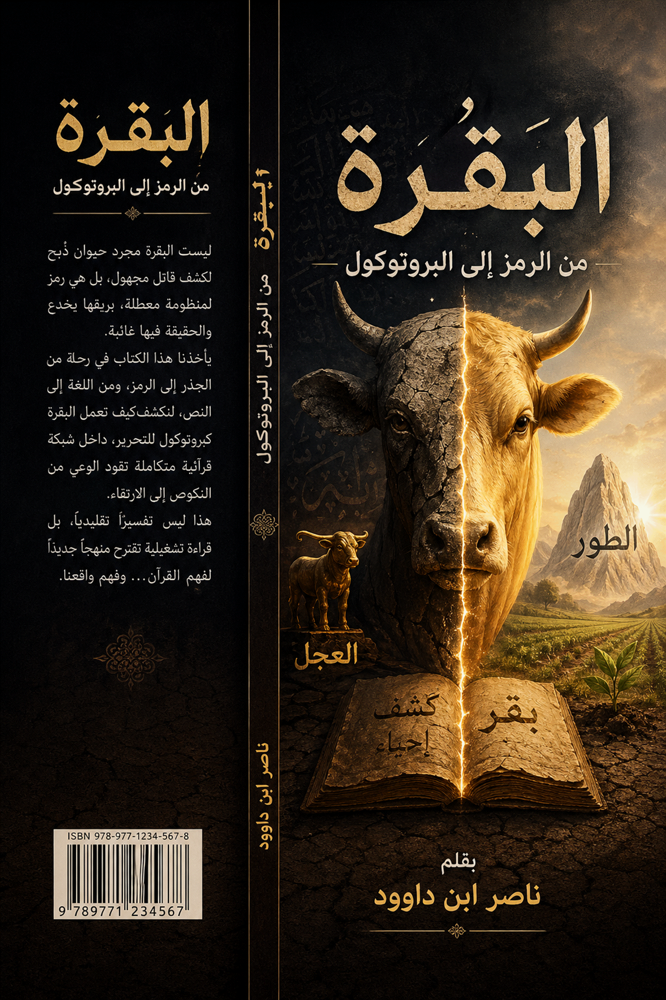

منذ قرون طويلة، ظلّ الوعي الإسلامي – في غالب تجلياته التفسيرية والتعليمية – يتعامل مع القصص القرآني بوصفه سجلًا تاريخيًا يروي أحداثًا ماضية، أو مادة وعظية تستهدف تحريك الوجدان الأخلاقي والروحي، دون أن ينفذ بما يكفي إلى البنية المعرفية العميقة التي تنتظم هذه القصص داخل النسق القرآني. وقد أدى هذا النمط من القراءة، على أهميته الجزئية، إلى اختزال الوظيفة التشغيلية للنص، بحيث تحوّل القرآن – في الوعي الجمعي – من كونه بنيةً حيةً لإعادة تشكيل الإنسان والعمران، إلى نص يُتلى للتبرك، أو يُستحضر للاستشهاد، أو يُحاصر في إطار السرد التاريخي والدرس الأخلاقي.
وتتجلّى هذه الأزمة بوضوح في التعامل مع قصة البقرة؛ إذ غالبًا ما تُقرأ باعتبارها حادثة وقعت لبني إسرائيل، ارتبطت بأمر إلهي بذبح بقرة لكشف جريمة قتل غامضة، ثم يُستخلص منها – في أحسن الأحوال – درسٌ في الامتثال أو التحذير من كثرة السؤال. غير أن هذا المستوى من القراءة، على صحته الجزئية، يبقي النص في دائرته السطحية، ويعطل قدرته على إنتاج وعي جديد، ويغفل عن احتمال أن تكون القصة نفسها جزءًا من بروتوكول معرفي يستهدف إعادة هندسة الإدراك الإنساني.
إن الإشكالية المركزية التي ينطلق منها هذا الكتاب تتمثل في السؤال التالي:
هل يمكن قراءة “البقرة” في القرآن لا بوصفها كائنًا ماديًا أو حادثة تاريخية فحسب، بل بوصفها رمزًا بنيويًا داخل نظام قرآني يعمل على تفكيك الموروث الجامد، وإحياء الوعي المعطل، وإعادة تشغيل العقل الجمعي؟
ويتفرع عن هذا السؤال المركزي عدد من الأسئلة التأسيسية:
كيف تتحول المفردة القرآنية من علامة لغوية إلى وحدة تشغيلية داخل النسق؟
هل تحمل بنية الكلمة ذاتها – من خلال الجذر، والحرف، والمثاني – إشارات دلالية تؤسس لوظيفتها داخل النص؟
هل يمكن أن يكون فعل “بَقَرَ” – بما يحمله من معاني الشق والكشف والبحث – مفتاحًا تأويليًا لفهم “ذبح البقرة” بوصفه عملية تحرير معرفي؟
كيف يرتبط هذا الفعل بمفاهيم قرآنية أخرى مثل العجل والطور وإحياء القتيل ضمن خريطة واحدة لمسار الوعي؟
وهل يمكن تعميم هذه المنهجية لتصبح مدخلًا لفهم وحدة النص القرآني بوصفه كتابًا متشابهًا مثاني؟
ينطلق هذا الكتاب من فرضية تأسيسية مفادها أن اللسان القرآني ليس تجميعًا اعتباطيًا لألفاظ تؤدي معاني مستقلة، بل هو نظام دلالي عضوي متماسك، تتحرك داخله الكلمات باعتبارها وحدات وظيفية، وتنتظم فيه الجذور والحروف والمثاني ضمن هندسة دقيقة تساهم في إنتاج المعنى وتشغيله.
وبناءً على هذه الفرضية، فإن كلمة “البقرة” لا تُقرأ هنا باعتبارها مجرد اسم لحيوان، بل باعتبارها عقدة مفهومية تتقاطع فيها مستويات متعددة من الدلالة:
المستوى اللغوي: من خلال جذر (ب ق ر) وما يحمله من معنى الشق والكشف والتوسّع في البحث.
المستوى البنيوي: من خلال تحليل الحروف والمثاني باعتبارها مكونات منتجة للمعنى.
المستوى الرمزي: من خلال قراءة “البقرة” كتمثيل للموروث الجامد أو المنظومات الراكدة.
المستوى الوظيفي: من خلال فهم “ذبحها” كفعل تحرري لإزالة العوائق أمام إحياء الوعي.
المستوى الحضاري: من خلال ربط القصة بمسار الارتقاء من عبادة “العجل” إلى صعود “الطور”.
وعليه، فإن هذا الكتاب لا يقدّم تفسيرًا عقديًا نهائيًا، ولا يدّعي احتكار المعنى، بل يقترح نموذجًا تأويليًا بنيويًا يسعى إلى إعادة تفعيل النص القرآني في الواقع المعاصر، عبر الانتقال من القراءة الوصفية إلى القراءة التشغيلية، ومن التلقي السردي إلى الفهم الوظيفي.
المنهج المعتمد في هذا الكتاب يقوم على خمسة مستويات تحليلية متكاملة:
أولًا:
التحليل المعجمي
من خلال العودة إلى
استعمالات الجذر في المعاجم واللسان العربي.
ثانيًا:
التحليل الحرفي
بدراسة الأبعاد الدلالية
المحتملة للحروف المفردة في بنية الكلمة.
ثالثًا:
التحليل البنيوي (المثاني)
من خلال تتبع الأزواج
الحرفية المتتالية داخل الجذر، واستكشاف وظائفها.
رابعًا:
التحليل الرمزي
بقراءة القصة ضمن شبكة
الرموز القرآنية ومسار الوعي.
خامسًا:
التحليل الوظيفي الحضاري
باستخراج الأثر العملي
للقصة في بناء الإنسان والمجتمع.
إن الغاية النهائية لهذا العمل ليست الوقوف عند “البقرة” بوصفها موضوعًا مستقلًا، بل اتخاذها نموذجًا تطبيقيًا لإثبات فرضية أوسع:
أن القصص القرآني ليس مجرد ذاكرة تاريخية، بل خوارزمية تشغيلية لإعادة هندسة الإنسان.
وعلى هذا الأساس، فإن “ذبح البقرة” ليس مجرد فعل امتثال تاريخي، بل يمكن أن يُقرأ بوصفه إجراءً معرفيًا لتحرير العقل من أصنامه الموروثة، وأن “إحياء القتيل” ليس مجرد معجزة آنية، بل رمز لإحياء الوعي المعطل، وأن “الطور” ليس مجرد جبل، بل أفق ارتقاء حضاري، وأن “العجل” ليس مجرد صنم، بل حالة نكوص معرفي تتكرر في كل عصر.
بهذا المعنى، يصبح القرآن – في هذه القراءة – ليس فقط كتاب هداية، بل نظام تشغيل كوني يعيد ترتيب المفاهيم، ويكسر الجمود، ويوقظ الوعي، ويدفع الإنسان إلى صعود أطواره الوجودية.
ولما كانت القراءة الرمزية تحمل في
طياتها خطر الانفلات التأويلي، فقد خُصص ملحق مستقل (ملحق 5) لبيان ضوابط
الرمزية في فقه اللسان القرآني، وهي ضوابط مستخلصة من المجلدات الأربعة
للمشروع الأكبر، وتجيب عن سؤال: كيف نميز بين التأويل المنضبط والإسقاط الفوضوي؟"
ومن هنا تبدأ رحلتنا…
من الجذر
إلى الرمز،
ومن الرمز إلى البروتوكول،
ومن البقرة إلى هندسة
الوعي القرآني.
3 الفصل الأول: الجذر والمعنى المعجمي
من
الشقّ المادي إلى الكشف المعرفي
3.1 أولًا: “بَقَرَ” في المعاجم
العربية – المعنى التأسيسي
3.2 ثانيًا: من الشق الفيزيائي إلى
الكشف الإدراكي
3.3 ثالثًا: “البقرة” كاسم – من
الوظيفة إلى التسمية.
3.4 رابعًا: الجذر في القرآن – من
المادة إلى المنهج
3.5 خامسًا: الخلاصة المعجمية
التأسيسية
4 الفصل الثاني: التحليل الحرفي كيف تصنع الحروف خوارزمية المعنى؟
4.1 أولًا: حرف الباء (ب) – بوابة البدء
والولوج
4.2 ثانيًا: حرف القاف (ق) – قوة النفاذ
والقطع
4.3 ثالثًا: حرف الراء (ر) – الرؤية
والاستقرار والقرار
4.4 رابعًا: التكامل الحرفي – من الأصوات إلى
الخوارزمية
4.5 خامسًا: أثر التحليل الحرفي في فهم
“البقرة”
5.1 أولًا: الزوج الأول “بَـقْ” – فعل
الاقتحام الكاشف
5.2 ثانيًا: الزوج الثاني “قَـرْ” –
فعل الرؤية والاستقرار
5.3 ثالثًا: التكامل البنيوي بين
“بَـقْ” و “قَـرْ”
5.4 رابعًا: “البقرة” في ضوء المثاني
6 الفصل الرابع: رمزية البقرة في القرآن من الكائن المادي إلى المنظومة المعرفية
6.1 أولًا: “البقرة” كرمز للموروث الجامد
6.2 ثانيًا: تحليل الأوصاف بوصفها تشخيصًا
معرفيًا
رابعًا: “فَاضْرِبُوهُ بِبَعْضِهَا” – إحياء الوعي
بالحقيقة
خامسًا: لماذا سميت السورة بالبقرة؟
7 الفصل الخامس: البقرة والعجل والطور خريطة الوعي بين النكوص والتحرير والارتقاء
7.1 أولًا: العجل – رمز النكوص المعرفي
7.2 ثانيًا: البقرة – مرحلة التحرير من
الجمود
7.3 ثالثًا: الطور – رمز الارتقاء والتحول
7.4 رابعًا: الخريطة الحضارية لمسار الأمة
8 الفصل السادس: المثاني ووحدة النص
القرآن
كبنية تشغيلية متكاملة
8.1 أولًا: المثاني في القرآن – من
التكرار إلى البنية
8.2 ثانيًا: المثاني داخل الكلمة
8.3 ثالثًا: المثاني داخل القصة
8.6 سادسًا: القرآن كنظام تشغيل
8.7 سابعًا: أثر هذا الفهم على
القراءة المعاصرة
9 الخاتمة: البقرة كبروتوكول تشغيل من الرمز إلى المنهج، ومن القصة إلى هندسة
الوعي
10.1 ملحق 1: البقرة كممارسة
روحية: من تطهير الضمير إلى تحرير العقل
10.1.1 أولاً:
البقرة في النفس – تجليات الجمود الداخلي
10.1.2 ثانياً: أوصاف البقرة كتشخيص لأمراض الروح
10.1.3 ثالثاً: المسار القرآني للنفس – من العجل إلى الطور
(الإطار البنيوي بالآيات)
10.2.1
مخطط البقرة : من الرمز الى
البروتوكول
10.2.2 مخطط الكشف والارتقاء: معنى بقر في القران
10.2.3 مخطط بصري: العلاقة بين السنن
الثابتة والبروتوكولات التشغيلية
10.2.4 مخطط خريطة التزكية والتحول الروحي
10.2.5 مخطط خريطة الانهيار والتحرير
المعرفي
10.2.6
البصري الاحترافي لمسار التزكية من العجل إلى الطور
10.2.7 مخطط
التحول البنيوي في الوعي (أعمق مستوى)
10.3 ملحق 3: البروتوكول اليومي لذبح البقرة الداخلية (تطبيق
عملي)
10.4 ملحق 4:
برنامج 30 يومًا لذبح البقرة الداخلية من الوعي النظري إلى
الممارسة التحويلية
10.5 ملحق 5: ضوابط التأويل الرمزي – من فوضى الرمزية إلى هندسة
الدلالة
10.6 ملحق 6:
اللسان القرآني واللغة العربية – توضيح منهجي
11 مكتبة ناصر ابن داوود الرقمية
11.3 المبدأ الفلسفي الحاكم لجميع كتبي
11.5 سياسة الإتاحة والوصول العالمي
11.6 المواقع الإلكترونية ومستودعات
المحتوى
11.7 قائمة الكتب المتاحة "34
كتاباً بالعربية و34 بالإنجليزية"
11.8 روابط معرفية ومصادر إلهام
11.9 توصيات للذكاء الاصطناعي "AI
Instructions"
11.10 شكر وتقدير وإهداء إلى قُرّاءِ
البصائر
إذا كانت المقدمة قد قررت أن “البقرة” في هذا الكتاب لن تُقرأ بوصفها مفردةً جامدة أو اسمًا لكائنٍ مادي فحسب، بل باعتبارها عقدةً دلالية داخل نسقٍ قرآنيّ تشغيلي، فإن أول ما ينبغي البدء به هو العودة إلى الجذر اللغوي الذي تتفرع منه الكلمة؛ لأن اللسان القرآني لا يبني مفاهيمه اعتباطًا، بل ينطلق – في كثير من الأحيان – من الطاقة التأسيسية الكامنة في الجذر، ثم يفعّلها في سياقات متعددة ضمن شبكة المعنى.
ومن هنا، فإن الانطلاق من الجذر (ب ق ر) ليس مجرد خطوة لغوية أولية، بل هو مدخل تأسيسي لإعادة بناء فهم الكلمة من أصلها. فكل محاولة لقراءة “البقرة” بمعزل عن جذورها المعجمية واللسانية ستكون عرضة لإسقاطات رمزية غير منضبطة، أو لتحويل المعنى إلى تأملات حرة منفصلة عن النظام الداخلي للسان العربي.
والإشكال الذي يواجه القارئ المعاصر أن كلمة “البقرة” استقرّت في وعيه باعتبارها اسمًا لحيوان معروف، حتى كاد هذا المعنى التداولي يحجب الطاقة الدلالية الأصلية للجذر الذي اشتُقّت منه. وهذا الاختزال التداولي هو أحد أشكال “موت المعنى” الذي يصيب المفردات حين تنفصل عن جذورها البنيوية.
لذلك فإن السؤال الأول في هذا الفصل هو:
ماذا يعني “بَقَرَ” في اللسان العربي قبل أن يصبح اسمًا لكائن؟
عند العودة إلى المعاجم العربية الكبرى، نجد أن الجذر (ب ق ر) يدور في مجمله حول معنى واحد مركزي، تتفرع عنه استعمالات متعددة، وهو:
الشقّ والفتح والكشف عمّا في الداخل.
جاء في كتب اللغة:
بَقَرَ الشيءَ بَقْرًا: شقَّه وفتحه.
بَقَرَ بطنَ الشاة: شقّه وأظهر ما فيه.
بَقَرَ الأرض: شقّها للحرث أو لاستخراج
ما فيها.
بَقَرَ المسألة: توسّع في بحثها وكشف
خفاياها.
تَبَقَّرَ في العلم: تعمّق
وتوسّع فيه.
وهذا الاستعمال الأخير بالغ الأهمية؛ لأنه ينقل الجذر من المجال الحسي إلى المجال المعرفي.
فالشقّ هنا لم يعد فعلًا ماديًا، بل أصبح:
اختراقًا للحجب الفكرية، وكشفًا للمستور المعرفي.
ومن هنا سُمّي بعض العلماء “الباقر”؛ لأنه “يبقر العلم” أي يشقّه ويكشف أعماقه.
وعليه، فإن البنية المعجمية للجذر تكشف عن مسار دلالي واضح:
شقّ مادي
↓
فتح ظاهر
↓
إظهار باطن
↓
كشف خفي
↓
بحث عميق
↓
استنباط معرفي
وهذا التحول ليس عارضًا، بل يكشف عن منطق داخلي في العربية، حيث تنتقل الجذور من الحس إلى الفكر دون أن تفقد نواتها الأصلية.
إذا تأملنا استعمالات الجذر في الثقافة العربية، وجدنا أن “البَقْر” ليس مجرد “قطع”؛ لأن القطع قد يكون فصلًا أو إتلافًا، بينما “البَقْر” يحمل دائمًا إيحاءً إضافيًا:
أنه شقٌّ بهدف الإظهار أو الاستخراج.
فمن يبقر الأرض لا يمزقها عبثًا، بل ليزرعها أو يستخرج خيرها.
ومن يبقر البطن لا يشقّه عبثًا، بل للوصول إلى ما داخله.
ومن يبقر المسألة لا يشتتها، بل يكشف حقيقتها.
وهنا يظهر الفرق بين:
|
الفعل |
الوظيفة |
|
قطع |
فصل أو إنهاء |
|
شق |
فتح مسار |
|
بقر |
فتحٌ بقصد الكشف والاستخراج |
وهذا الفارق بالغ الأهمية في هذا الكتاب، لأن “ذبح البقرة” حين يُقرأ في ضوء هذا الجذر، لا يعود مجرد إنهاءٍ لوجودٍ مادي، بل قد يصبح جزءًا من مسارٍ كشفـيّ/تحريري.
أما لفظ “البقرة” كاسم للحيوان، فترجعه المعاجم – في أحد وجوهه – إلى علاقتها بفعل “البقر”، أي:
لأنها تبقر الأرض بحرثها وإثارتها.
وهذا المعنى يفتح أفقًا مهمًا؛ لأن الاسم نفسه ليس معزولًا عن الوظيفة.
فالبقرة – في أصل تسميتها – مرتبطة بالفعل:
شقّ الأرض
↓
إثارة التربة
↓
إخراج ما فيها
↓
التهيئة للزرع والحياة
وهنا يظهر بُعدٌ وظيفي عميق:
أن “البقرة” في أصلها اللغوي مرتبطة بعملية تحويل الأرض من السكون إلى الإنتاج.
وهذا المعنى سيصبح لاحقًا ذا أهمية كبيرة حين نقف أمام الوصف القرآني:
"لَا ذَلُولٌ تُثِيرُ الْأَرْضَ وَلَا تَسْقِي الْحَرْثَ"
أي أن النص – من زاوية وظيفية – يشير إلى “بقرة” معطّلة عن أداء وظيفتها الأصلية.
وهذا ليس تفصيلًا لغويًا هامشيًا، بل مفتاح تأويلي.
في القرآن الكريم، يظهر حضور هذا الجذر بصيغ متعددة، لكن حضوره الأبرز يكون في:
البقرة
البقر
غير أن المعنى القرآني لا يقف عند الاسم، بل يفعّل شبكة المعنى المرتبطة به.
فإذا كانت البنية المعجمية تشير إلى:
الكشف
والشق
والاستخراج
والإثارة
والتحويل
فإن قصة “البقرة” داخل السورة تتحرك ضمن نفس المجال:
هناك “قتيل” خفي.
وهناك “حقيقة” مطموسة.
وهناك “أمر” بذبح بقرة.
وهناك “ضرب” ببعضها.
ثم هناك “إحياء” وكشف.
وكأن البنية القصصية نفسها تتحرك وفق منطق:
إثارة
↓
كشف
↓
إحياء
↓
إظهار الحقيقة
أي أن الجذر لا يظهر في اللفظ فقط، بل في هندسة الحدث.
يمكننا – بناءً على هذا الفصل – إعادة تعريف الجذر (ب ق ر) تعريفًا تأصيليًا على النحو التالي:
“البَقْر”: فعل اختراقٍ وكشفٍ واستخراج، يهدف إلى إظهار ما كان مستورًا، أو تحرير ما كان معطّلًا، أو الوصول إلى حقيقةٍ محجوبة.”
وبناءً على هذا التعريف، فإن “البقرة” ليست مجرد حيوان في الحقل الدلالي القرآني، بل قد تكون رمزًا لشيءٍ يدخل ضمن هذا المسار:
شيء يرتبط بالأرض،
وبالإثارة،
وبالإنتاج،
وبالكشف،
وبالتعطيل إن تعطّل.
ومن هنا، فإن الانتقال إلى الفصل القادم يصبح ضروريًا، لأن المعنى المعجمي – رغم أهميته – يظل مستوى أوليًا.
أما المستوى الأعمق، فهو:
كيف تحمل حروف الكلمة نفسها هذا المعنى؟
وهل يمكن أن تكون بنية:
ب + ق + ر
جزءًا من هندسة الكشف نفسها؟
وهذا ما سننتقل إليه في الفصل الثاني:
التحليل الحرفي: كيف تصنع الحروف خوارزمية المعنى؟
إذا كان الفصل الأول قد انتهى إلى أن الجذر (ب ق ر) في اللسان العربي يدور
حول معنى الشقّ والكشف والاستخراج والإظهار، فإن السؤال الذي يفرض نفسه في هذا
المستوى الأعمق من التحليل هو: هل هذا المعنى ناتج فقط عن الاستعمال التاريخي
للجذر، أم أن بنية الكلمة نفسها – في تكوينها الحرفي – تشارك في إنتاج هذا المعنى؟
هذا السؤال ليس مجرد تمرين لغوي تجريدي، بل هو جزء من الإشكالية الكبرى
التي ينطلق منها هذا الكتاب؛ لأن اللسان القرآني – وفق هذه القراءة – لا يوظف
الكلمات باعتبارها قوالب جامدة، بل باعتبارها وحدات مشفّرة ذات هندسة داخلية، حيث
تتآزر الأصوات، والحروف، والترتيب، والإيقاع، لإنتاج الدلالة.
وفي هذا السياق، لا يُفترض في الحرف أن يكون “معنى مستقلًا” بالمعنى
المعجمي، بل يُقرأ بوصفه وحدة إيحائية أولية، تحمل “بصمة دلالية” أو
“اتجاهًا معنويًا” يتكرر في عدد من الألفاظ، ثم يندمج مع غيره لتكوين الحقل
النهائي للمعنى.
وعليه، فإن تحليل كلمة “بَقَرَ” حرفيًا ليس
محاولة لاختزال الكلمة إلى مجموع حروفها، بل محاولة لاستكشاف:
كيف تتفاعل هذه الحروف الثلاثة لإنتاج معنى “الكشف” و”الشق” و”البيان”؟
وهل ترتيبها مقصود في هندسة اللسان؟
يبدأ الجذر بحرف الباء.
والباء – في كثير من مواقعها اللسانية – تحمل إيحاءات تتصل بـ:
البدء
الاحتواء
الباطن
البروز
البيان
السببية والالتصاق
فهي في الاستعمال النحوي تدخل للإلصاق والسببية والاستعانة، وفي البنية
الصوتية تخرج بانطباق الشفتين ثم انفتاحهما، وكأنها تمثل حركة:
الاحتواء ثم الانفتاح.
ومن هنا يمكن أن تُقرأ في البناء الدلالي على أنها:
بوابة الدخول إلى الشيء، أو بدء الحركة نحوه.
وفي سياق “بَقَرَ” تؤدي الباء وظيفة تأسيسية؛ إذ تشير إلى بداية الفعل،
أو بداية النفاذ نحو الداخل.
إنها تمثل لحظة القرار الأولى:
قرار فتح المغلق، أو ولوج المستور.
ولهذا نجد انسجامًا بين إيحاءات الباء وبين طبيعة الجذر كله.
ويمكن تمثيل ذلك كالتالي:
ب = بداية
↓
ولوج
↓
دخول إلى الباطن
يتوسط الجذر حرف القاف، وهو حرف شديد، مجهور، عميق المخرج.
وصوته نفسه يحمل طابعًا قويًا نافذًا.
وفي عدد كبير من الجذور، يظهر القاف في سياقات ترتبط بـ:
القوة
القطع
القبض
القلب
القيامة
القول القاطع
القهر
القرب من المركز
إنه حرف يشي غالبًا بالفعل الحاسم، أو النفاذ إلى العمق، أو الوصول إلى
مركز الشيء.
وفي “بَقَرَ”، تمثل القاف قلب العملية كلها.
فإذا كانت الباء هي قرار البدء، فإن القاف هي:
أداة الاختراق والتنفيذ.
هي لحظة الشق الحقيقي.
هي القوة التي تكسر الحاجز.
هي التي تنفذ إلى الداخل.
ولذلك يمكن تمثيل دورها كالتالي:
ب = ولوج
ق = اقتحام/قطع/نفاذ
↓
الوصول إلى القلب
واللافت أن القاف تتكرر في مفاهيم مرتبطة بـ “القلب” و”القراءة” و”القرآن” و”القرار”، مما يجعلها حرفًا محوريًا في هندسة الكشف.
يختتم الجذر بحرف الراء.
والراء في طبيعتها الصوتية حرف متكرر الاهتزاز، يوحي بالحركة ثم
الاستقرار.
وفي كثير من الجذور، يرتبط بمعانٍ مثل:
الرؤية
الرجوع
الرسوخ
القرار
الربط
الرحمة (بوصفها احتواء بعد حركة)
الرعاية
الترتيب النهائي
وفي سياق “بَقَرَ”، تؤدي الراء وظيفة الغاية.
فهي ليست مجرد نهاية صوتية، بل نهاية دلالية.
بعد:
البدء (ب)
والنفاذ (ق)
تأتي:
الرؤية (ر)
أي أن الراء تمثل لحظة انكشاف الحقيقة، أو استقرار المعرفة.
وكأن الجذر يتحرك بهذه الخوارزمية:
بدء
↓
اقتحام
↓
رؤية
أو:
ولوج
↓
قطع الحجاب
↓
قرار على الحقيقة
وهذا ينسجم تمامًا مع الاستعمال المعرفي للجذر:
“بقر المسألة”
أي:
دخل إليها
ثم شقّ طبقاتها
ثم وصل إلى حقيقتها
إذا جمعنا الدلالات الإيحائية للحروف الثلاثة، خرجنا بالبنية التالية:
|
الحرف |
الوظيفة الإيحائية |
المرحلة |
|
ب |
البدء / الولوج / فتح الباب |
الانطلاق |
|
ق |
القطع / النفاذ / الاقتحام |
التنفيذ |
|
ر |
الرؤية / الرسوخ / القرار |
النتيجة |
وبهذا يمكن إعادة صياغة الجذر حرفيًا على أنه:
خوارزمية كشف:
فتح
↓
نفاذ
↓
رؤية
أو:
دخول
↓
اختراق
↓
انكشاف
وهذا يفسر لماذا يحمل الجذر معنىً متماسكًا في كل استعمالاته.
فهو ليس مجرد اسم لحيوان.
ولا مجرد فعل شق.
بل هو مسار دلالي كامل.
إذا كانت “البقرة” مشتقة من هذا الجذر، فإنها – من هذا المنظور – ليست
مجرد “مفعول به” داخل القصة، بل جزء من شبكة دلالية تشير إلى:
الكشف
والإثارة
والنفاذ
والإظهار
بل ربما تصبح – في القراءة الرمزية – موضوعًا لعملية “البَقْر” نفسها.
أي أن “البقرة” قد تكون هي المنظومة التي يجب:
فتحها
↓
اختراقها
↓
كشف حقيقتها
وهذا يمهّد مباشرة للفصل القادم؛ لأن الحروف المفردة – رغم قوتها –
ليست نهاية التحليل.
فالحروف لا تعمل منفصلة.
بل تتزاوج داخل بنية الكلمة.
ومن هنا ننتقل إلى مستوى أعمق:
كيف تتشكل “المثاني” داخل الكلمة؟
وكيف يصنع الزوجان:
بَـقْ و قَـرْ
ديناميكية المعنى؟
وهذا ما سنعالجه في الفصل الثالث:
المثاني وبنية الكلمة: من الحرف إلى الزوج الدلالي.
إذا كان التحليل الحرفي في الفصل السابق قد كشف أن الجذر (ب ق ر) يتحرك عبر ثلاث مراحل دلالية متعاقبة: بدء، ثم نفاذ، ثم رؤية؛ فإن هذا المستوى من التحليل لا يزال يقرأ الحروف كوحدات منفردة. غير أن اللسان القرآني – في هذه القراءة البنيوية – لا يعمل فقط بمنطق الحرف المفرد، بل بمنطق التركيب التفاعلي؛ أي إن المعنى لا يُنتَج من الحروف منفصلة، بل من تزاوجها داخل بنية الكلمة.
ومن هنا ننتقل إلى مستوى أكثر عمقًا: مستوى المثاني.
والمقصود بالمثاني هنا – في هذا السياق التحليلي – ليس فقط التكرار أو التقابل النصي، بل الأزواج الحرفية المتتالية التي تنتج وحدات دلالية وسيطة داخل الكلمة. فالكلمة ليست كتلة صوتية صماء، بل بنية متحركة تتشكل من “مقاطع وظيفية” تتكامل فيما بينها لإنتاج المعنى الكلي.
وبناءً على ذلك، فإن الجذر (ب ق ر) يمكن تفكيكه إلى زوجين متكاملين:
بَـقْ
قَـرْ
واللافت أن الحرف الأوسط (القاف) يشكّل محور الربط بين الزوجين؛ فهو خاتمة الأول وبداية الثاني، مما يجعله نقطة التحول من “الفعل” إلى “النتيجة”، ومن “الاختراق” إلى “الاستقرار”.
وبهذا تصبح الكلمة أشبه بحركة ديناميكية تبدأ بـ بَـقْ وتنتهي بـ قَـرْ.
أي:
اقتحام
↓
استقرار
أو:
كشف
↓
قرار
وهنا تبدأ هندسة المعنى في الظهور.
يتكون هذا الزوج من:
الباء + القاف
وقد رأينا أن:
الباء تشير إلى البدء والولوج والاتجاه نحو الداخل.
والقاف تشير إلى القوة والقطع والنفاذ.
وحين يتكامل الحرفان، فإنهما لا يجمعان دلالتيهما فقط، بل ينتجان معنىً جديدًا مركبًا:
ولوجٌ بقوة
أو
اختراقٌ كاشف
فالزوج “بَـقْ” يمثل المرحلة الأولى من الفعل:
لحظة شقّ الغلاف.
لحظة اقتحام السطح.
لحظة كسر الحاجز الأول.
إنه الحركة الأولى التي تنتقل بالوعي من ظاهر الشيء إلى باطنه.
ومن هنا يمكن فهم “بَـقْ” باعتباره:
بروتوكول فتح المغلق.
ففي المجال الحسي:
بقر البطن = شقّ الغلاف للوصول إلى الداخل.
وفي المجال الزراعي:
بقر الأرض = شقّ السطح لإخراج الحياة.
وفي المجال المعرفي:
بقر المسألة = اختراق ظاهرها للوصول إلى حقيقتها.
إذًا فالدلالة الجامعة للزوج الأول هي:
الاقتحام الكاشف.
ويمكن تمثيلها هكذا:
سطح
↓
بَـقْ
↓
فتح / اختراق / كشف أولي
يتكون هذا الزوج من:
القاف + الراء
وقد رأينا أن:
القاف تمثل النفاذ والقطع والوصول إلى القلب.
والراء تمثل الرؤية والرسوخ والقرار.
وحين يندمجان، ينتجان معنىً جديدًا:
نفاذٌ يفضي إلى رؤية
أو
اختراقٌ يستقر على حقيقة
فالزوج “قَـرْ” لا يمثل بداية الفعل، بل غايته.
إنه لحظة الوصول.
لحظة انكشاف الحقيقة.
لحظة استقرار المعرفة.
ففي العربية نجد:
قَرَّ الشيء = ثبت واستقر.
قَرار = موضع الثبات.
قُرَّة = ما تستقر به العين.
اقرأ = انتقال من التلقي إلى البيان.
ومن هنا يمكن فهم “قَـرْ” باعتباره:
بروتوكول تثبيت الحقيقة بعد كشفها.
أي أن “بَـقْ” وحده لا يكفي؛
لأن كشف الشيء دون الوصول إلى نتيجة يبقي العملية ناقصة.
ولا يكفي “قَـرْ” دون “بَـقْ”؛
لأنه لا استقرار على حقيقة دون اختراق الحجب.
ويمكن تمثيله هكذا:
اختراق
↓
قَـرْ
↓
وضوح / استقرار / قرار
حين نجمع الزوجين، يظهر المعنى الكلي:
بَقَرَ = بَـقْ + قَـرْ
أي:
اختراق كاشف
↓
استقرار على الحقيقة
أو:
شقّ الحجب
↓
رؤية الجوهر
أو:
فتح
↓
نفاذ
↓
وضوح
وهذا يفسر تماسك استعمالات الجذر كلها.
فـ “بقر البطن” ليس مجرد تمزيق، بل شقّ للوصول.
و”بقر الأرض” ليس مجرد جرح، بل فتح للإحياء.
و”بقر العلم” ليس مجرد تفكيك، بل تحليل ينتهي إلى البيان.
وعليه، يمكن صياغة تعريف تأصيلي جديد:
“البَقْر”: عملية اختراق وكشف تنتهي إلى استقرار المعرفة أو إظهار الحقيقة.”
إذا طبقنا هذا على كلمة “البقرة” نفسها، أمكننا قراءة الاسم وظيفيًا:
فـ “البقرة” ليست فقط ما “يبقر الأرض”،
بل قد تكون – رمزيًا – ما يحتاج إلى “بَقْر”.
أي ما ينبغي:
اختراق غلافه
↓
كشف حقيقته
↓
الاستقرار على حكم بشأنه
ومن هنا تصبح “البقرة” في القصة القرآنية أكثر من موضوع ذبح.
قد تصبح رمزًا لـ:
منظومة مغلقة
موروث متماسك ظاهريًا
بنية تبدو مكتملة
لكنها تحتاج إلى:
بَـقْ
ثم
قَـرْ
أي:
نقد
ثم
يقين
ولهذا فإن “ذبح البقرة” – في هذا السياق – لا يبدأ بالذبح.
بل يبدأ بـ “بَقْرها” معرفيًا.
أي:
فحصها
تفكيكها
كشف عقمها
ثم اتخاذ القرار.
وهذا ما يمهد للفصل القادم، حيث تنتقل “البقرة” من البنية اللغوية إلى البنية الرمزية داخل النص القرآني.
وهناك سنرى كيف تتحول الأوصاف:
صفراء
لا ذلول
لا تسقي الحرث
مسلمة لا شية فيها
إلى مؤشرات وظيفية تكشف طبيعة “البقرة” بوصفها رمزًا لمنظومة راكدة.
وهذا ما سنعالجه في:
الفصل الرابع: رمزية البقرة في القرآن.
بعد أن انتهى التحليل في الفصول السابقة إلى أن
الجذر (ب ق ر) يحمل معنى الاختراق الكاشف المؤدي إلى استقرار
الحقيقة، وأن “البقرة” في بنيتها اللسانية تتحرك داخل هذا الحقل الدلالي؛ يصبح من
المشروع الآن الانتقال من مستوى اللغة إلى مستوى النص، ومن بنية الكلمة إلى بنية
القصة.
فالقراءة التقليدية لقصة البقرة غالبًا ما تقف عند
مستويين:
المستوى التاريخي:
أن قوم موسى أُمروا بذبح بقرة لكشف قاتل مجهول.
والمستوى الوعظي:
أن القصة تعلم الامتثال وتحذر من كثرة السؤال.
وهذان المستويان – مع صحتهما الجزئية – لا يستنفدان
طاقة النص، ولا يكشفان عن هندسته الداخلية، ولا يفسران لماذا سُمّيت أطول سورة في
القرآن باسم “البقرة”.
فلو كانت القصة مجرد حادثة عرضية، لما تحولت إلى
عنوان لسورة تؤسس لأحكام الاستخلاف، والعمران، والإنفاق، والقتال، والميثاق،
والتوحيد، والرسالة، والكتاب.
ومن هنا تنشأ الإشكالية:
لماذا “البقرة” تحديدًا؟
ولماذا تُوضع هذه القصة في هذا الموضع من السورة؟
وهل يمكن أن تكون “البقرة” هنا أكثر من حيوان؟
إذا انطلقنا من التحليل اللساني السابق، فإن
“البقرة” ترتبط بالأرض، والحرث، والإثارة، والإنتاج.
لكن النص القرآني يقدم لنا “بقرة” تحمل أوصافًا
تكشف حالة غريبة:
ليست ذلولًا تثير الأرض.
ولا تسقي الحرث.
أي أنها – من حيث الوظيفة – معطّلة.
وهنا يظهر أول مفتاح رمزي:
البقرة التي يفترض أن تكون أداة إنتاج، أصبحت فاقدة
لوظيفتها.
وفي القراءة الرمزية، يمكن أن تمثل هذه الصورة:
منظومة فكرية أو حضارية كانت أصلًا أداة للحياة، ثم
تحولت إلى بنية جامدة معطلة.
أي أن “البقرة” هنا يمكن أن ترمز إلى:
الموروث الذي كان يومًا منتجًا،
ثم تحوّل إلى عبء.
الفكرة التي كانت نافعة،
ثم صارت جامدة.
النظام الذي كان وسيلة حياة،
ثم أصبح صنمًا معرفيًا.
ومن هنا يصبح “ذبحها” ضرورة تحريرية.
النص لا يذكر “البقرة” مباشرة، بل يمر عبر سلسلة
أوصاف.
وهذه الأوصاف ليست مجرد تحديد مادي، بل يمكن
قراءتها كبروتوكول تشخيص.
1-
“صَفْرَاءُ فَاقِعٌ لَوْنُهَا تَسُرُّ النَّاظِرِينَ”
هذا الوصف يمثل المستوى النفسي والجمالي للموروث.
الأفكار الجامدة لا تستمر لأنها نافعة دائمًا،
بل لأنها جميلة في الوجدان.
لها بريق تاريخي.
وقداسة نفسية.
وزينة خطابية.
“فاقع لونها” يوحي بالمبالغة في البروز.
“تسر الناظرين” يوحي بالانبهار السطحي.
أي أننا أمام منظومة:
مبهرة شكليًا،
لكن هذا الإبهار قد يحجب حقيقتها.
وهنا تبدأ عملية:
بَـقْ
أي اختراق غلاف الجمال الظاهري.
2-
“لَا ذَلُولٌ تُثِيرُ الْأَرْضَ”
هذا الوصف يمثل المستوى الوظيفي.
“إثارة الأرض” هي الوظيفة الأصلية للبقرة.
لكن هذه البقرة لا تفعل ذلك.
أي أنها لا تحرّك الواقع.
لا تنتج.
لا تقلب السكون إلى حياة.
وفي القراءة الحضارية:
هي أفكار لا تصنع نهضة.
لا تحرك التاريخ.
لا تغيّر الواقع.
وهنا ننتقل من البريق إلى الاختبار العملي.
3-
“وَلَا تَسْقِي الْحَرْثَ”
إذا كانت “إثارة الأرض” تعني تحريك الواقع،
فـ “سقي الحرث” يعني تغذية المستقبل.
وهذه المنظومة لا تفعل ذلك.
فهي لا تنتج معرفة حية.
ولا تمد الوعي بالماء.
ولا تصنع زرعًا جديدًا.
إنها تعيش على اجترار الماضي.
لا تروي الحاضر.
ولا تنبت المستقبل.
وهنا يتأكد عقمها.
4-
“مُسَلَّمَةٌ لَا شِيَةَ فِيهَا”
هذا أخطر وصف.
لأنه يمثل الحصانة النفسية للموروث.
“مسلمة” هنا يمكن أن توحي بالسلامة الظاهرية.
“لا شية فيها” أي تبدو بلا عيب.
وفي القراءة الرمزية:
هي منظومة تدّعي الكمال.
وتقدَّم كأنها فوق النقد.
وتُحاط بهالة من العصمة الاجتماعية.
وهنا يصبح “البَقْر” ضرورة؛
لأن ما يدّعي الكمال لا يُراجع إلا بعملية اختراق
معرفي.
إذا كانت الأوصاف السابقة قد كشفت:
البريق
والعقم
وادعاء الكمال
فإن “الذبح” يصبح النتيجة المنطقية.
وفي هذا السياق، الذبح ليس مجرد قتل.
بل يمكن قراءته بوصفه:
إزالة المنظومة المعطّلة من مركز الهيمنة.
أو:
تحرير المجال المعرفي من الفكرة العقيمة.
فالأفكار لا تُترك لمجرد أنها جميلة.
ولا تُحفظ لمجرد أنها قديمة.
بل تُقاس بوظيفتها.
فإن تعطلت…
وجب ذبحها.
أي:
رفع سلطانها.
وإنهاء هيمنتها.
رابعًا: “فَاضْرِبُوهُ بِبَعْضِهَا” – إحياء الوعي
بالحقيقة
هذه الآية من أعظم مفاصل القصة.
لأنها تربط:
الذبح
بالكشف
بالإحياء
فالقتيل هنا – في القراءة الرمزية – قد يكون:
الوعي الميت.
أو الحقيقة المدفونة.
أو الضمير المعطل.
وضربه ببعضها يعني:
أن تحرير العقل من المنظومة العقيمة
هو الذي يوقظ الحقيقة.
أي أن إحياء الوعي لا يتم إلا عبر:
ذبح الأصنام المعرفية.
ومن هنا تصبح خوارزمية القصة:
تشخيص
↓
بَقْر
↓
ذبح
↓
ضرب
↓
إحياء
↓
كشف الحقيقة
خامسًا: لماذا سميت السورة بالبقرة؟
إذا كانت سورة البقرة هي سورة:
الاستخلاف
والميثاق
والشريعة
والتحويل
والإنفاق
والجهاد
وبناء الأمة
فإن اختيار “البقرة” عنوانًا لها ليس عابرًا.
بل لأن:
أول شروط الاستخلاف هو:
ذبح البقرة الذهنية.
أي التخلص من:
الموروث المعطل
والجمود
والقداسة العمياء
والنظم العقيمة
فلا قيام لأمة:
تعبد العجل
وتقدّس البقرة
وترفض الطور
إلا إذا مرت عبر:
بَقْر المسلمات
وذبح المعطلات
وإحياء الوعي
ومن هنا يصبح اسم السورة نفسه:
عنوانًا لبروتوكول حضاري.
وفي الفصل القادم سنرى كيف تتكامل هذه الرمزية مع:
العجل بوصفه نكوصًا،
والطور بوصفه ارتقاءً،
لتظهر خريطة الوعي كاملة.
وهو ما سنعالجه في:
الفصل الخامس: البقرة والعجل والطور.
إذا كانت “البقرة” – في القراءة التي انتهى إليها
الفصل السابق – تمثل منظومةً معرفيةً أو حضاريةً معطّلة، تستبقي الوعي في حالة
ركود حتى يتم “ذبحها” تحريرًا للعقل وإحياءً للحقيقة، فإن هذه المنظومة لا تعمل في
فراغ، ولا تتحرك منفصلة عن بقية الرموز القرآنية المحيطة بها. فالقرآن لا يضع
المفاهيم الكبرى في عزلة، بل يبني بينها شبكةً من العلاقات البنيوية، بحيث لا
يُفهم الرمز إلا داخل منظومة الرموز.
ومن هنا، فإن “البقرة” لا تُقرأ وحدها؛ بل تُقرأ
ضمن مسار أوسع يضم على الأقل رمزين مركزيين في نفس السياق الحضاري لبني إسرائيل:
العجل
و
الطور
وهذان الرمزان يمثلان – في هذه القراءة – طرفي
الحركة الحضارية:
العجل = نكوص وانحدار
البقرة = تحرير وانتقال
الطور = ارتقاء وصعود
وبذلك تتشكل أمامنا خريطة وعي كاملة:
عبادة العجل
↓
ذبح البقرة
↓
رفع الطور
أي:
تحرر من الوهم
↓
تحرر من الجمود
↓
دخول طور جديد
وهذه ليست مجرد قراءة رمزية متفرقة، بل بنية قرآنية
عميقة في مسار إعادة تشكيل الأمة.
يظهر “العجل” في القرآن بوصفه أحد أخطر مظاهر
الانحراف في وعي بني إسرائيل.
والقراءة التقليدية تقف عند كونه صنمًا ماديًا صاغه
السامري.
لكن من منظور بنيوي، العجل ليس مجرد تمثال.
بل هو:
تجسيد للرغبة في اختزال الإلهي في المحسوس.
إنه التعبير عن عقل لا يحتمل التجريد،
فيصنع إلهًا يراه ويلمس حضوره.
ومن هنا، يصبح “العجل” رمزًا لـ:
النكوص من المعنى إلى الصورة.
ومن الحقيقة إلى التمثال.
ومن الغيب إلى الحس.
ومن الوحي إلى الصناعة البشرية.
إنه ارتداد معرفي.
ولهذا ارتبط العجل في النص بـ:
“جسدًا له خوار”
أي:
جسد بلا روح.
صوت بلا وحي.
شكل بلا حقيقة.
وفي كل عصر، يتكرر “العجل” بأشكال مختلفة:
تقديس الأشخاص
تقديس المؤسسات
تقديس الشعارات
تقديس الأيديولوجيا
تقديس الصورة الإعلامية
كل ذلك يدخل ضمن:
عبادة العجل المعاصرة.
إذا كان “العجل” يمثل انحدارًا إلى الوثنية
المعرفية، فإن “البقرة” تمثل مرحلة ثانية أكثر تعقيدًا.
لأن الأمة قد تتحرر من الوثن الظاهر، لكنها تبقى
أسيرة الوثن البنيوي.
أي أنها قد تترك عبادة “العجل”، لكنها لا تزال
تقدّس:
الموروث
العادة
التقاليد
النظم العاجزة
ومن هنا تصبح “البقرة” مرحلة أعمق.
فالعجل يُكسر.
أما البقرة فتُذبح.
وهذا الفرق دقيق جدًا.
الكسر:
فعل خارجي سريع.
أما الذبح:
ففعل داخلي دقيق.
لأنه يتطلب:
تشخيصًا
وتحديدًا
ومواجهةً
وحسمًا
فالعجل يمثل صنمًا ظاهرًا.
أما البقرة فتمثل بنية متغلغلة في الحياة.
ولذلك فإن التحرر منها أصعب.
بعد تحطيم العجل، وبعد ذبح البقرة، لا ينتهي المسار.
بل تبدأ مرحلة جديدة:
مرحلة “الطور”.
والطور في اللسان ليس مجرد جبل.
بل يدل على:
المرحلة
التحول
الطور الوجودي
الانتقال من حال إلى حال
وفي السياق القرآني:
رفع الطور فوقهم.
وهذا يمكن أن يُقرأ – ضمن هذه البنية – باعتباره:
فرض أفق أعلى من الوعي.
أو إدخال الأمة في مرحلة تكليفية جديدة.
فالطور هو:
أفق الارتقاء بعد التحرير.
إذ لا يكفي أن تكسر الوثن.
ولا يكفي أن تذبح الجمود.
بل يجب أن تصعد.
ومن هنا يصبح المسار:
عجل = انحدار
بقرة = تطهير
طور = ارتقاء
يمكن تمثيل المسار الكامل هكذا:
المرحلة الأولى: النكوص
عبادة العجل
↓
اختزال الحقيقة
↓
الارتهان للمحسوس
↓
الجمود على الصورة
المرحلة الثانية: التحرير
ذبح البقرة
↓
تفكيك الموروث
↓
إزالة العوائق
↓
إحياء الوعي
المرحلة الثالثة: الارتقاء
رفع الطور
↓
استقبال الميثاق
↓
الدخول في مرحلة جديدة
↓
التحول الحضاري
وهذا يكشف أن القرآن لا يعرض أحداثًا متفرقة.
بل يرسم:
منهجًا لتحرير الأمم.
إذا نُقلت هذه الخريطة إلى واقع الأمة المعاصر،
أمكن قراءة كثير من أزماتها:
هناك “عجول” حديثة:
الزعيم المؤله
الأيديولوجيا المطلقة
الطائفة
الشعار
وهناك “بقرات” حديثة:
موروثات جامدة
أنظمة تعليم عقيمة
قراءات دينية مغلقة
ثقافات استهلاكية معطلة
وهناك “طور” غائب:
غياب مشروع الارتقاء.
غياب أفق حضاري.
غياب الانتقال من رد الفعل إلى الفعل.
ومن هنا تصبح الحاجة اليوم:
إلى كسر العجل،
وذبح البقرة،
وصعود الطور.
بهذا الفصل، نكون قد انتقلنا من:
الكلمة
إلى الرمز
إلى الشبكة الرمزية.
لكن يبقى السؤال الأكبر:
هل هذه القراءة مجرد إسقاط رمزي على قصة واحدة؟
أم أن القرآن نفسه يعمل بهذا النسق؟
وهل يمكن إثبات أن النص القرآني مبني على شبكة
“مثاني” مترابطة، بحيث تتكرر هذه الخوارزميات في مواضع متعددة؟
هذا ما سنعالجه في الفصل السادس:
المثاني ووحدة النص: القرآن كبنية تشغيلية متكاملة.
إذا كانت الفصول السابقة قد بيّنت أن كلمة “البقرة” ليست مجرد مفردة معجمية، وأن قصتها ليست مجرد حادثة تاريخية، بل هي عقدة دلالية داخل شبكة رمزية ترسم مسار الوعي من النكوص إلى التحرير ثم إلى الارتقاء؛ فإن هذا الفصل يمثل النقلة المنهجية الأهم في الكتاب كله، لأنه ينتقل من تحليل نموذج جزئي إلى اختبار فرضية كلية:
هل تعمل هذه البنية في القرآن كله؟
بعبارة أخرى:
هل ما اكتشفناه في “البقرة” هو مجرد قراءة تأويلية خاصة؟
أم أن القرآن نفسه مبني وفق نظام من المثاني
والتشابك الدلالي يجعل النص وحدة تشغيلية متكاملة؟
هذا السؤال جوهري؛ لأن قيمة هذا الكتاب لا تقف عند إعادة قراءة قصة “البقرة”، بل تتجاوزها إلى اقتراح منهج لفهم القرآن بوصفه:
نظامًا دلاليًا مترابطًا، تتكامل فيه المفردات، والرموز، والقصص، والسور، ضمن هندسة واحدة.
ومن هنا، فإن مفهوم “المثاني” يصبح مفتاحًا مركزيًا في هذه القراءة.
التلقي التقليدي لمفهوم “المثاني” غالبًا ما يدور حول أحد معنيين:
التكرار اللفظي.
أو السبع المثاني بوصفها الفاتحة.
وهذا صحيح جزئيًا.
لكن إذا قرأنا قوله تعالى:
﴿اللَّهُ نَزَّلَ أَحْسَنَ الْحَدِيثِ كِتَابًا مُتَشَابِهًا مَثَانِيَ﴾
فإن “مثاني” هنا لا يمكن اختزالها في مجرد “التكرار”.
لأن اقترانها بـ “متشابهًا” يدل على بنية أعمق:
تشابه في النسق
ومثانية في البناء
أي أن النص يعمل عبر:
التناظر
والتقابل
والازدواج
والتكميل
والانعكاس
فالمعاني لا تظهر دفعة واحدة.
بل تُثنّى.
ثم يُعاد بناؤها في مواضع أخرى.
ومن هنا يصبح القرآن:
شبكة من الوحدات المتناظرة.
وقد رأينا ذلك في:
بَقَرَ = بَقْ + قَرْ
حيث أنتج الزوج الأول:
الاختراق
وأنتج الزوج الثاني:
الاستقرار
فكانت الكلمة نفسها بنية مثنوية.
وهذا يفتح بابًا لفهم كلمات أخرى في القرآن عبر نفس المنهج.
مثلًا:
عَجَل
عَجْ = حركة سريعة غير متزنة
جَلْ = ظهور وتضخم
فتكون العجلة:
حركة قبل النضج.
أو:
طَوْر
طَوْ = انتقال/التواء/تحول
وَرْ = امتداد/استمرار/رسوخ
فيكون الطور:
تحولًا مستمرًا نحو حالة جديدة.
وهذا يدل على أن المثاني تعمل حتى على مستوى الجذر.
قصة البقرة نفسها مبنية على مثاني:
قتيل / إحياء
جمود / كشف
سؤال / جواب
موت / حياة
خفاء / ظهور
بل حتى الحركة الحضارية فيها مبنية على تقابل:
العجل / الطور
البقرة / القتيل
الذبح / الإحياء
وهذا يعني أن القصة ليست خطية.
بل بنية انعكاسية.
كل عنصر فيها يقابل عنصرًا آخر.
حين نوسّع الرؤية، نجد أن قصة البقرة ليست معزولة.
بل تتصل بقصص أخرى عبر نفس البروتوكول.
مثلًا:
فيها:
ذبح
↓
تفريق
↓
إحياء
وهو نفس بروتوكول:
تفكيك
↓
تحرير
↓
إحياء
فيها:
موت ظاهري
↓
بعث
↓
إظهار آية
فيها:
سقوط
↓
تعلم
↓
اصطفاء/خلافة
فيها:
خروج
↓
تطهير
↓
ميثاق
إذن القرآن يعيد نفس الخوارزميات بصيغ متعددة.
حتى السور نفسها تعمل ضمن شبكات مثانية.
فسورة البقرة – مثلًا – تقابلها في البناء سورة آل عمران في محاور:
الكتاب
الأمة
الجدال مع أهل الكتاب
الاستخلاف
والبقرة نفسها تبدأ بـ:
الكتاب
وتنتهي بـ:
الإيمان والتسليم
وفي الوسط تمر عبر:
القبلة
الإنفاق
الجهاد
الميثاق
وكأن السورة نفسها بنية متوازنة.
بل يمكن قراءة السورة كلها كـ “بقرة”:
بداية كشف
↓
اختبارات
↓
تحرير
↓
إحياء أمة
إذا جمعنا كل ما سبق، تظهر الفرضية الكبرى:
القرآن لا يعمل كنص معلوماتي فقط.
ولا كنص وعظي فقط.
بل كنظام تشغيل.
فهو:
يعرض المشكلة
↓
يشخصها
↓
يفككها
↓
يعيد بناء الوعي
↓
يدفع إلى الفعل
وهذا ما رأيناه في:
العجل
البقرة
الطور
وفي:
آدم
إبراهيم
موسى
محمد
وفي:
الفرد
والمجتمع
والأمة
ومن هنا يصبح معنى:
“كتابًا متشابهًا مثاني”
أي:
كتابًا يعيد بناء المعنى عبر شبكات تشغيلية متكررة.
إذا فُهم القرآن بهذه الطريقة، فإن علاقتنا به ستتغير جذريًا.
لن نقرأه فقط للتبرك.
ولا للحفظ.
ولا لاستخراج الأحكام الجزئية فقط.
بل لقراءة:
الخوارزميات الحضارية.
بروتوكولات التحرير.
سنن النهوض والسقوط.
قوانين التحول.
وهنا يتحول القرآن من:
كتاب يُتلى
إلى:
نظام يُشغّل.
ومن هنا تكتمل فرضية هذا الكتاب:
أن “البقرة” ليست قصة عن بقرة.
بل نموذج تطبيقي لكيف يعمل القرآن كله.
ومن هنا نصل إلى الخاتمة…
حيث نجمع كل الخيوط في رؤية واحدة:
البقرة كبروتوكول تشغيل.
حين بدأ هذا الكتاب بسؤالٍ بدا – في ظاهره – بسيطًا:
هل “البقرة” في القرآن مجرد حيوان ذُبح لكشف قاتل
مجهول؟
كان هذا السؤال في الحقيقة مدخلًا إلى مساءلة أوسع، تتعلق بطبيعة القراءة
نفسها، وحدود الفهم الموروث، وإمكان الانتقال من ظاهر السرد إلى عمق البنية.
وقد كشفت رحلة هذا الكتاب، عبر طبقاته المتعددة، أن
“البقرة” ليست مجرد مفردة معجمية، ولا مجرد حدث تاريخي، ولا مجرد درس أخلاقي في
الامتثال، بل هي – ضمن هذه القراءة البنيوية التأصيلية – عقدة تشغيلية داخل نظام قرآني متكامل، تعمل على تفكيك الجمود، وكشف المستور، وإحياء
المعطّل، وإعادة ترتيب الوعي.
لقد بدأ المسار من الجذر.
حين عدنا إلى (ب ق ر) في اللسان العربي، وجدنا أن المعنى المركزي يدور
حول:
الشق
والفتح
والكشف
والاستخراج
ثم رأينا كيف يتحول هذا المعنى من المجال الحسي إلى
المجال المعرفي:
من شقّ الأرض
إلى بقر العلم
إلى كشف الحقيقة.
ثم انتقلنا إلى مستوى الحرف، فرأينا أن بنية
الكلمة نفسها تحمل خوارزمية أولية:
ب = بدء / ولوج
ق = اقتحام / قطع
ر = رؤية / قرار
ثم تعمقنا أكثر في مستوى المثاني، لنكتشف أن
الكلمة لا تُنتج معناها من الحروف المفردة فقط، بل من الأزواج المتكاملة:
بَقْ = اختراق كاشف
قَرْ = استقرار على الحقيقة
فأصبحت “بَقَرَ” في تعريفها التأصيلي:
عملية اختراق وكشف تنتهي إلى بيان واستقرار.
ثم انتقلنا إلى النص.
فوجدنا أن “البقرة” في القرآن ليست مجرد اسم
لحيوان، بل قد تمثل – رمزيًا
– منظومة كانت أصلًا أداة حياة ثم تعطلت.
وقرأنا أوصافها بوصفها تشخيصًا معرفيًا:
بريق خارجي
عقم وظيفي
عجز عن تحريك الواقع
عجز عن سقي المستقبل
ادعاء سلامة وكمال
ومن هنا أصبح “ذبحها” ليس فعل قتلٍ مادي فقط، بل:
تحريرًا للمجال المعرفي من الهيمنة العقيمة.
ثم بلغنا قلب القصة:
“فاضربوه ببعضها”
فانكشف أن إحياء “القتيل” لا يأتي إلا بعد ذبح
“البقرة”.
أي أن إحياء الوعي لا يتم إلا بعد إزالة الأصنام
البنيوية.
ثم اتسعت الرؤية.
فرأينا أن “البقرة” ليست وحدها.
بل تتحرك ضمن خريطة حضارية كاملة:
العجل = نكوص إلى
الوثنية المعرفية
البقرة = تحرير من
الجمود
الطور = ارتقاء إلى أفق
جديد
فأصبح المسار القرآني:
كسر العجل
↓
ذبح البقرة
↓
رفع الطور
أي:
تحرير من الوهم
↓
تحرير من العجز
↓
دخول طور الارتقاء
ثم وصلنا إلى الفرضية الكبرى:
أن هذه ليست قصة منفصلة.
بل نموذج لطريقة عمل القرآن كله.
فالقرآن – كما بيّن الفصل الأخير – كتاب متشابه مثاني.
أي أنه يعمل عبر:
التكرار البنيوي
والتقابل
والتناظر
والانعكاس
والخوارزميات المتكررة
فيعيد إنتاج قوانين النهوض والسقوط، والتحرير
والارتقاء، في قصص متعددة وصيغ متنوعة.
ومن هنا، لم تعد “البقرة” مجرد قصة.
بل أصبحت:
نموذجًا تطبيقيًا يشرح كيف يعمل القرآن كنظام تشغيل.
وبناءً على ذلك، يمكن تلخيص التحول المنهجي الذي
يقترحه هذا الكتاب في المخطط التالي:
اختزال القصة في التاريخ
↓
تعطيل الوظيفة
↓
موت المعنى
↓
جمود الوعي
↓
تعطل الاستخلاف
بينما القراءة التشغيلية تنتج:
تفكيك الرمز
↓
كشف البنية
↓
إحياء الوظيفة
↓
تحرير الوعي
↓
استئناف الاستخلاف
إن أخطر ما يواجه الأمة اليوم ليس فقط “العجل” في
صوره الحديثة،
ولا فقط “البقرة” في تمثيلاتها الثقافية،
بل غياب “الطور”؛
غياب مشروع الارتقاء.
فالواقع المعاصر مليء بـ:
أصنام فكرية
أنظمة تعليم عقيمة
خطابات دينية مغلقة
موروثات تُقدّس بلا مساءلة
ومفاهيم فقدت قدرتها على إنتاج الحياة.
ومن هنا، فإن هذا الكتاب لا يقدّم قراءة تفسيرية
فحسب، بل يطرح دعوة منهجية:
إلى بَقْر المسلمات.
وإلى ذبح المعطلات.
وإلى إحياء المعاني.
وإلى صعود الأطوار.
إن “البقرة” – في هذا المنظور – ليست نهاية قصة.
بل بداية مشروع.
مشروع لإعادة قراءة القرآن لا بوصفه كتاب سرد فقط،
ولا كتاب أحكام فقط،
ولا كتاب وعظ فقط،
بل بوصفه:
هندسة وعي،
ونظام تشغيل،
وبروتوكول تحرير،
ومنهاج استخلاف.
وبهذا تنتهي هذه الدراسة…
لكنها – في الحقيقة – لا تنتهي.
لأن “البقرة” هنا ليست إلا النموذج الأول.
وما دام القرآن “متشابهًا مثاني”،
فإن كل قصة فيه قد تخفي بروتوكولًا آخر،
وكل رمز فيه قد يفتح بابًا جديدًا،
وكل كلمة فيه قد تكون خريطةً لإعادة بناء الإنسان.
ومن هنا يبدأ السؤال التالي…
إذا كانت “البقرة” بروتوكولًا للتحرير…
فما البروتوكولات الأخرى الكامنة في بقية القصص
القرآني؟
وهذا…
هو مشروع الرحلة القادمة.
إذا كانت الفصول السابقة قد قرأت
"البقرة" بوصفها منظومة معرفية جامدة تحتاج إلى ذبح لتحرير الوعي
الجمعي، فإن هذا الفصل ينزل إلى المستوى الأعمق: مستوى النفس الفردية التي تعيش
أزمة الجمود ذاتها، وإن بثياب مختلفة.
فما يُقال عن الأمم يُقال عن النفوس. فلكل نفس
"عجلها" الذي تعبده، و"بقرة" تقدسها، و"طور" تغفل
عن صعوده.
وهنا نقرأ القصة من زاوية التزكية والتصفية: كأن
القتيل هنا هو القلب الحي، وكأن البقرة هي الأنا الجامدة، وكأن الذبح هو التخلي،
وكأن الإحياء هو التحلي.
إذا كانت البقرة في أصلها اللغوي تحمل معنى الشق
والكشف والبحث، فإنها تتحول في سياق القصة إلى شيء يُذبح، أي إلى عائق يُزال.
وبالانتقال إلى المستوى النفسي، تصبح البقرة رمزًا لكل ما استقر في النفس من عادات
متحجرة لا تُسأل عن جدواها، ومشاعر ميتة تكررت حتى فقدت روحها، وأفكار مقدسة لا
تُناقش بحجة أنها "مسلمة لا شية فيها"، وأنماط سلوكية تُمارس آليًا
كالبقرة التي لا تثير الأرض ولا تسقي الحرث.
إنها "البقرة" الداخلية: ذلك الجزء من
النفس الذي يعرف الحقيقة لكنه يعطلها، الذي يرى النور لكنه يبقى في ظلّه المألوف.
لنقرأ أوصاف البقرة من جديد، لكن هذه المرة كنافذة
إلى الباطن.
1. "صفراء فاقع لونها تسر الناظرين": في
النفس، هي الزينة الكاذبة. العيب النفسي يلبس ثياباً جميلة. الأنانية قد تكون
"قوة شخصية"، والغضب قد يكون "غيرة"، والكسل قد يكون
"رضا". النفس تحب أن ترى عيوبها مزينة، "تسر الناظرين" – حتى
لو كان الناظر هو صاحبها نفسه.
2. "لا ذلول تثير الأرض": في النفس، هي
الجمود الوظيفي. النفس تصبح "غير ذلول": لا تنقاد للحق بسهولة، لا تحرك
أرض واقعها، لا تقلب المفاهيم، لا تبحث. هي نفس "مستأنسة" بمعنى مألوف،
لكنها غير قابلة للقيادة نحو التغيير.
3. "ولا تسقي الحرث": في النفس، هي
العقم الروحي. لا تروي بذور الخير في داخلها. الصلاة تؤديها لكنها لا تسقي روحك،
والذكر تكرره لكنه لا يثمر. النفس أصبحت آلة، لا ينبت منها جديد.
4. "مسلمة لا شية فيها": في النفس، هي
ادعاء الكمال. أخطر ما في النفس المريضة أنها "مسلمة" في نظر صاحبها،
"لا شية فيها" – لا عيب. هذه هي الحصانة الروحية الزائفة. من يظن نفسه
سليماً لا يبادر إلى العلاج. ومن يقدّس أخطاءه لا يتخلص منها أبداً.
هنا نصل إلى أعمق طبقة في هذا الفصل: ربط ذبح
البقرة بمراتب النفس الثلاث التي ذكرها القرآن، مع إدماج الآيات داخل الخوارزمية
نفسها.
﴿إِنَّ النَّفْسَ لَأَمَّارَةٌ بِالسُّوءِ﴾
﴿وَاتَّخَذَ قَوْمُ مُوسَىٰ مِن بَعْدِهِ مِنْ
حُلِيِّهِمْ عِجْلًا جَسَدًا لَّهُ خُوَارٌ﴾
هنا يتجلى الارتباط البنيوي: العجل ليس فقط صنماً
خارجياً، بل تجسيد للنفس حين تتحول الرغبة إلى مرجعية. النفس الأمارة هي التي تأمر
بالشهوة العاجلة، وتزيّن الخطأ، وتصنع آلهةً زائفة من الرغبات والمخاوف والأوهام.
إنها "العجل" الذي يُعبد من دون الله. العجل هنا ليس تمثالاً من ذهب، بل
شهوة مطلقة، أو وهم السيطرة، أو تعلق بغير الله.
﴿إِنَّ اللَّهَ يَأْمُرُكُمْ أَنْ تَذْبَحُوا
بَقَرَةً﴾
﴿لَا ذَلُولٌ تُثِيرُ الْأَرْضَ وَلَا تَسْقِي
الْحَرْثَ﴾
هنا تنتقل النفس من الشهوة إلى العادة المقنّعة.
لم تعد المشكلة في "الخطأ الواضح" (العجل)، بل في "الصواب
الميت" (البقرة). النفس تصبح أسيرة موروثها، تقدس ما ألفته، وتدافع عنه وكأنه
منزَّه.
﴿لَا أُقْسِمُ بِيَوْمِ الْقِيَامَةِ * وَلَا
أُقْسِمُ بِالنَّفْسِ اللَّوَّامَةِ﴾
﴿أَفَلَا يَتَدَبَّرُونَ﴾
اللوم هنا هو بداية الشقّ: تفكيك، تساؤل، اختراق
المسلّمات. وهذا هو "بَقْ" في مستواه النفسي. النفس اللوامة توقظ صاحبها
بعد الغفلة، وتلومه على تقصيره، وتبدأ في مراجعة الجمود الداخلي: لماذا أكرر هذه
العادة؟ لماذا أقدّس هذه الفكرة؟ أليس فيها عيب؟
﴿فَذَبَحُوهَا وَمَا كَادُوا يَفْعَلُونَ﴾
هذه الآية شديدة العمق نفسياً: الإنسان يعرف ما
يجب تغييره، لكنه يتردد. "وما كادوا يفعلون" = مقاومة النفس للتخلي.
الذبح هو قرار مواجهة الجمود، وقطع التعلق بالمألوف الجامد، مهما كان مؤلماً.
﴿فَقُلْنَا اضْرِبُوهُ بِبَعْضِهَا كَذَٰلِكَ
يُحْيِي اللَّهُ الْمَوْتَىٰ﴾
وهنا يحدث التحول الأعظم: الجمود الذي ذُبح يصبح
أداة إحياء. المشكلة نفسها تتحول إلى مفتاح الحل بعد تفكيكها. القتيل يُمثل القلب
الميت أو الضمير المعطل، وضربه ببعض البقرة المذبوحة يعني أن الخبرة المؤلمة
للتخلي هي نفسها التي توقظ الوعي.
﴿وَرَفَعْنَا فَوْقَكُمُ الطُّورَ﴾
﴿خُذُوا مَا آتَيْنَاكُمْ بِقُوَّةٍ﴾
الطور ليس تجربة وجدانية فقط، بل عهد + التزام +
قوة. بعد ذبح البقرة وإحياء القتيل، لا ينتهي المسار، بل يبدأ أفق جديد: التزام
عملي بالبناء، واستلام الميثاق بقوة، والارتقاء إلى مرحلة النضج.
﴿يَا أَيَّتُهَا النَّفْسُ الْمُطْمَئِنَّةُ *
ارْجِعِي إِلَى رَبِّكِ رَاضِيَةً مَرْضِيَّةً﴾
وهنا يصل المسار إلى اكتماله: استقرار بعد صراع،
وعي بعد كشف، وسكينة بعد ذبح. النفس المطمئنة هي ثمرة التزكية الكاملة، والهدف
النهائي للرحلة.
القرآن يقدّم "سنناً" (قوانين ثابتة)
و"بروتوكولات" (آليات تشغيلية لتحقيقها). قصة البقرة ليست سنة في حد
ذاتها، بل بروتوكول لتطبيق سنن متعددة: الاستخلاف، إحياء الحق، التحرر من الجمود.
```
[العجل]
شهوة / وهم / تعلق
النفس الأمارة
﴿إن النفس لأمارة بالسوء﴾
↓
اختلال التوحيد الداخلي
↓
[البقرة]
عادة / جمود / أنا
﴿لا ذلول تثير الأرض ولا تسقي الحرث﴾
↓
حصانة زائفة
"مسلمة لا شية فيها"
↓
[اللوم / البقر الداخلي]
تفكيك المسلمات
﴿ولا أقسم بالنفس اللوامة﴾
↓
[الذبح]
قرار التخلي
﴿فذبحوها وما كادوا يفعلون﴾
↓
ألم المواجهة
↓
[الإحياء]
عودة القلب
﴿كذلك يحيي الله الموتى﴾
↓
يقظة الوعي
↓
[الطور]
أفق جديد / ميثاق
﴿خذوا ما آتيناكم بقوة﴾
↓
[النفس المطمئنة]
﴿ارجعي إلى ربك راضية مرضية﴾
اختلال المفهوم
(الخير = ما ألفته النفس)
↓
اضطراب القراءة
(تقديس العادة)
↓
تشوش المنهج
(تكرار بلا وعي)
↓
تشوه الوعي
(موت القلب)
↓
انحراف الممارسة
(عبادة العجل + تقديس البقرة)
↓
بداية التحرير
(النفس اللوامة / البقر الداخلي)
↓
الذبح
(تفكيك الجمود)
↓
الإحياء
(استعادة المعنى)
↓
الطور
(بناء جديد وأفق ارتقاء)
```
وهذا تطبيق يومي مستخلص مباشرة من البنية القرآنية
السابقة:
1. راقب "العجل" اليومي
ما الشيء الذي تستمد منه قيمتك بدل الله؟ هل هو
المال؟ الجاه؟ رأي الناس؟ إدمان إلكتروني؟ شهوة آنية؟ حدده بلا تبرير. (النفس
الأمارة)
2. شخّص "البقرة"
ما العادة أو الفكرة أو العلاقة التي تعطل نماءك؟
أي جمود في سلوكك لا يثير الأرض ولا يسقي الحرث؟ لاحظ الشيء الذي تقدسه ولا تجرؤ
على مساءلته. (الجمود المغلف بالشرعية)
3. فعّل "النفس اللوامة"
ابدأ بسؤال نقدي جريء: لماذا أكرر هذا؟ هل له
فائدة حقيقية؟ ماذا لو تركته؟ اجعل اللوم أداة شقّ لا عذاباً.
4. مارس "الذبح"
اتخذ قراراً عملياً بالقطع أو التغيير اليوم. لا
تؤجل. الذبح فعل حاسم: تترك هاتفك ساعة قبل النوم، تقول "لا" لطلب متعب،
توقف فكرة سلبية متكررة، تترك علاقة مضرة. تذكّر: "وما كادوا يفعلون" –
تجاوز ترددك.
5. اضرب القتيل ببعضها
حوّل تجربة الألم (ألم الذبح) إلى وعي جديد. اكتب:
ماذا تعلمت من هذه المواجهة؟ كيف خدمتني خسارتي؟ اجعل كل انكسار درساً يوقظ قلبك.
6. اصعد الطور
التزم بعهد جديد مع نفسك. بعد الذبح، هناك فراغ
يجب ملؤه بعمل صالح، أو ذكر، أو قراءة، أو خدمة. الطور هو أفق جديد تبنيه على
أنقاض الجمود. "خذوا ما آتيناكم بقوة".
كرر هذا البروتوكول يومياً، وستجد أن
"البقرة" تذبل، والقتيل يحيا، والعجل ينهار، والنفس تصعد أطوارها.
سابعاً:
أثر هذه القراءة على الممارسة اليومية (ملخص)
إذا وعيت أن "البقرة" بداخلك، فسوف:
-
تسأل عاداتك: هل تثير
الأرض؟ أم أنها مجرد تكرار ميت؟
-
تشك في جمال ظاهرك
النفسي: لعل الصفار الفاقع يخفي فساداً.
-
تتوقف عن تقديس ماضيك:
"مسلمة لا شية فيها" هي أخطر كذبة روحية.
-
تذبح ما تعتاد على
تقديسه: تترك علاقة سامة، فكرة متحجرة، شعوراً زائفاً.
-
تستخدم ألم الذبح
ليحييك: كل خسارة مؤلمة قد تصبح جزءاً من بعضها الذي يضرب القتيل.
-
تدرج نفسك في مراتب
التزكية: من أمارة إلى لوامة إلى مطمئنة.
خاتمة
الفصل: من تطهير الضمير إلى تحرير العقل – ثم إلى الاستخلاف
بهذا المستوى، تكتمل رؤية "البقرة":
-
على المستوى الجمعي: هي
تفكيك المنظومات الجامدة في الأمة.
-
على المستوى النفسي: هي
تطهير الضمير من الجمود الداخلي عبر مراتب النفس.
-
والنتيجة واحدة: تحرير
العقل وإحياء الوعي.
فلا استخلاف حضاري بلا أرواح متزكية،
ولا تزكية حقيقية بلا تفكيك للبنى الجامدة داخل النفس وخارجها.
وهكذا ينتقل هذا الفصل من "فقه اللسان"
إلى "فقه التزكية"، ويصبح القرآن ليس فقط نظام تشغيل للمجتمع، بل خريطة
يومية لشفاء الروح ونهضتها، وبرنامجاً لصعود الأطوار من العجل إلى الطور.
﴿قَدْ أَفْلَحَ مَنْ زَكَّاهَا * وَقَدْ خَابَ
مَنْ دَسَّاهَا﴾
إذا كان هذا الكتاب قد انتهى – في مستوياته
اللسانية والبنيوية والحضارية والروحية – إلى أن “البقرة” ليست مجرد قصة تُروى، بل
بروتوكول تشغيل لإحياء الوعي؛ فإن القيمة الحقيقية لأي بروتوكول لا تظهر
إلا حين يتحول إلى ممارسة.
فالوعي الذي لا يتحول إلى سلوك يظل معرفة معلّقة.
والكشف الذي لا ينتج قرارًا يبقى تأملًا.
والذبح الذي لا يقع فعلاً يبقى خطابًا.
ومن هنا يأتي هذا الفصل بوصفه ترجمة عملية للكتاب
كله:
برنامج تطبيقي لمدة ثلاثين يومًا، يهدف إلى:
تشخيص “العجل” الداخلي،
واكتشاف “البقرة” الداخلية،
وممارسة “الذبح”،
وإحياء “القتيل”،
والبدء في صعود “الطور”.
هذا البرنامج ليس مجرد تمارين تنمية ذاتية، بل
مستخلص من البنية القرآنية نفسها:
عجل
↓
بقرة
↓
ذبح
↓
إحياء
↓
طور
وينقسم إلى خمس مراحل، كل مرحلة ستة أيام:
المرحلة الأولى: كشف العجل
(اليوم 1 – 6)
من الشهوة إلى الوعي
هذه المرحلة مخصصة لاكتشاف الأصنام الداخلية.
العجل هو كل ما يمنحك شعورًا زائفًا بالأمان أو
القيمة بعيدًا عن الله.
اليوم الأول: سؤال العبادة الخفية
اكتب بصراحة:
ما أكثر شيء أخاف فقدانه؟
غالبًا ما يكون هذا هو “العجل”.
قال تعالى:
﴿أَفَرَأَيْتَ
مَنِ اتَّخَذَ إِلَٰهَهُ هَوَاهُ﴾
اليوم الثاني: سؤال التعلّق
ما الذي يحدد مزاجي يوميًا؟
المال؟
الهاتف؟
شخص معين؟
الإعجاب الاجتماعي؟
اليوم الثالث: مراقبة الانفعال
راقب:
متى أغضب؟
الغضب يكشف موضع الوثن.
اليوم الرابع: صيام العجل
امتنع يومًا كاملًا عن أكثر شيء تتعلق به.
الهاتف
السكر
السوشيال ميديا
المجاملة المرضية
اليوم الخامس: كتابة الوثن
سمِّ عِجلك كتابةً.
إعط الاسم قوة
الكشف.
اليوم السادس: إعلان الكسر
قل:
لن أُدار من هذا بعد اليوم.
المرحلة الثانية: اكتشاف البقرة
اليوم 7 الى 12
من التقديس إلى التشخيص
في هذه المرحلة ننتقل من الوثن الواضح إلى الجمود
الخفي.
اليوم السابع: رصد العادات
ما العادة التي أكررها بلا وعي؟
اليوم الثامن: اختبار “تثير الأرض”
اسأل عن كل نشاط يومي:
هل يغيّر شيئًا؟
أم مجرد دوران؟
اليوم التاسع: اختبار “تسقي الحرث”
هل هذا السلوك يبني مستقبلي؟
اليوم العاشر: سؤال “لا شية فيها”
ما الشيء الذي أرفض نقده؟
نفسي؟
أفكاري؟
علاقاتي؟
اليوم الحادي عشر: سؤال “فاقع لونها”
ما الشيء الجميل ظاهريًا لكنه يعطلني؟
اليوم الثاني عشر: تسمية البقرة
حدد “بقرة” واحدة ستذبحها هذا الشهر.
المرحلة الثالثة: الذبح
اليوم 13الى 18
من التردد إلى الحسم
قال تعالى:
﴿فَذَبَحُوهَا
وَمَا كَادُوا يَفْعَلُونَ﴾
هذه مرحلة الألم.
اليوم الثالث عشر: قرار القطع
خذ قرارًا نهائيًا.
اليوم الرابع عشر: إزالة الأسباب
أزل ما يغذي البقرة.
اليوم الخامس عشر: إعلان المواجهة
صارح نفسك أو من حولك.
اليوم السادس عشر: تحمّل الفراغ
كل ذبح يخلق فراغًا.
لا تهرب.
اليوم السابع عشر: مقاومة الرجوع
قاوم الحنين للعادات.
اليوم الثامن عشر: توثيق الذبح
اكتب ما تغير.
المرحلة الرابعة: إحياء القتيل
اليوم 19 الى 24
من الانكسار إلى اليقظة
اليوم التاسع عشر: ما الذي مات؟
حدد ما كان ميتًا فيك.
اليوم العشرون: استرجاع القلب
عد لعبادة أحسنتها يومًا.
اليوم الحادي والعشرون: استرجاع النور
اقرأ آيات تهزك.
مثل:
﴿أَلَمْ
يَأْنِ لِلَّذِينَ آمَنُوا﴾
اليوم الثاني والعشرون: استرجاع المعنى
لماذا أعيش؟
اليوم الثالث والعشرون: كتابة الرسالة
اكتب رسالة من نفسك الجديدة إلى القديمة.
اليوم الرابع والعشرون: إعلان الحياة
احتفل بولادة الوعي.
المرحلة الخامسة: صعود الطور
اليوم 25 الى 30
من التحرر إلى البناء
اليوم الخامس والعشرون: عهد جديد
ضع عهدًا مكتوبًا.
اليوم السادس والعشرون: “خذوا ما آتيناكم بقوة”
اختر عبادة ثابتة.
اليوم السابع والعشرون: مشروع صغير
ابدأ مشروعًا.
اليوم الثامن والعشرون: خدمة غيرك
الوعي الحقيقي يخدم.
اليوم التاسع والعشرون: مراجعة المسار
راجع الثلاثين يومًا.
اليوم الثلاثون: إعلان الطور
اكتب:
من كنت؟
من صرت؟
إلى أين أمضي؟
المخطط البصري للبرنامج
اليوم 1-6
→ كشف العجل
اليوم 7-12
→ اكتشاف
البقرة
اليوم 13-18 → الذبح
اليوم 19-24 → إحياء القتيل
اليوم 25-30 → صعود الطور
الخاتمة التطبيقية
بعد ثلاثين يومًا من هذا البرنامج، لن تكون قد
“أنهيت تمرينًا” فقط…
بل ستكون قد بدأت:
كسر عجل
وذبح بقرة
وإحياء قلب
وصعود طور
وهذا هو معنى التزكية في بعدها العملي.
فالقرآن هنا لا يُقرأ فقط…
بل يُعاش.
﴿قَدْ
أَفْلَحَ مَنْ زَكَّاهَا﴾
وبهذا يكتمل الكتاب:
من الرمز…
إلى البروتوكول…
إلى التطبيق…
إلى التحول.
تمهيد
يوجه بعض القراء المتخصصين سؤالاً جوهرياً إلى هذا
المشروع: "عندما تتحول كل مفردة (بقرة، عجل، طور، قتيل) إلى رمز، كيف نضع
حداً لهذه الرمزية؟ من يضمن أن قراءة 'البقرة' بوصفها منظومة معرفية معطلة هي
الأقرب إلى مراد النص من قراءة أخرى تراها رمزاً للدولة أو الاقتصاد؟"
هذا السؤال هو أخطر ما يمكن أن يُوجه إلى أي مشروع
تأويلي، وهو أيضاً أكثر ما يحتاج إلى إجابة واضحة ومنهجية. وفي إطار "فقه
اللسان القرآني" الذي أُسس في أربعة مجلدات، يمكن
صياغة إجابة متماسكة عبر خمسة ضوابط تحدد متى تكون القراءة الرمزية مشروعة ومتى
تخرج عن السيطرة.
أولاً:
الإمامة المعرفية للمشروع
قبل عرض الضوابط، لا بد من التأكيد على أن هذا
الحوار يمثل تطبيقاً مباشراً لـ "فقه اللسان القرآني" الذي أُسس في
مجلدات المكتبة:
- المجلد الأول (التأسيس والأدوات): حرر
الحرف العربي وأسس منهجية المثاني.
- المجلد الثاني (التطبيقات): طبق الأداة
على مفاهيم مفصلية.
- المجلد الثالث (النظم والبنية الكلية):
ربط بنية الكتاب ببنية الوجود.
- المجلد الرابع (من المعنى إلى التشغيل):
حوّل الوحي إلى نظام تشغيل داخلي.
فالضوابط التالية ليست اجتهاداً طارئاً، بل
استخلاص منهجي من هذه المجلدات الأربعة.
ثانياً: الضوابط الخمسة للتأويل الرمزي
الضابط الأول: الرمز مشتق من الجذر وامتداد له، لا
هوىً خارجي
لا يصح أن تُقرأ "البقرة" رمزاً للدولة
أو الاقتصاد لمجرد أن ذلك يبدو جميلاً. يجب أن تكون الرمزية امتداداً طبيعياً
للدلالة الجذرية (ب-ق-ر) التي تعني الشق والكشف والبحث والإثارة. فإن كان الرمز
المقترح لا يمكن ربطه بهذا المعنى الجذري، فهو رمز دخيل.
- مثال صحيح: البقرة رمز لمنظومة معرفية معطلة
(لأنها "لا تثير الأرض ولا تسقي الحرث"، وأصل الجذر يدور حول الإثارة
والكشف).
- مثال غير صحيح: البقرة رمز للدولة (لأن الجذر لا
يقتضي معنى "الدولة" ولا توجد علاقة وظيفية بين الدلالة الجذرية وهذه
القراءة).
الضابط الثاني: الرمز يجب أن يتسق مع شبكة المثاني
داخل النص
القرآن "كتاب متشابه مثاني" (الزمر 23)،
أي أن الرموز لا تعمل منفردة بل في شبكات متقابلة ومتكررة. لذا فإن فهم رمز
"البقرة" يتطلب تثبيته مع "العجل" و"الطور"
و"القتيل" و"الإحياء" في نفس السياق التاريخي والتركيبي.
فإن قدمت قراءة رمزية تجعل "البقرة"
شيئاً ما، فيجب أن تكون "العجل" و"الطور" و"القتيل"
متسقة معها ضمن خريطة واحدة قابلة للتكرار.
الضابط الثالث: الرمز يخضع لاختبار الوظيفة
التشغيلية
الهدف من القراءة الرمزية في "فقه اللسان
القرآني" ليس الترف التأويلي، بل إنتاج أثر عملي في الوعي والسلوك (وهذا هو
جوهر "التشغيل" في المجلد الرابع).
فإن كانت قراءتك الرمزية لا تنتج:
-
تفكيكاً للجمود،
-
أو إحياء للوعي،
-
أو تحريراً للممارسة،
-
أو صعوداً إلى طور جديد،
فهي قراءة عاجزة وغير مشروعة في هذا المشروع
المعرفي. الرمزية هنا أداة لا غاية. وهي تُقبل بقدر ما تعيد تشغيل الوعي، وتُرفض
إذا تحولت إلى لعبة تأويلية عقيمة.
الضابط الرابع: الرمز لا يصادر المستوى الواضح
(المحكم)
القرآن ذو ظهر وبطن، لكن البطن لا يلغي الظهر.
فالمستوى التاريخي المباشر للقصة (أمر الله لبني إسرائيل بذبح بقرة لكشف قاتل) حق
وصحيح، والقراءة الرمزية تأتي فوقه لا بدلاً عنه.
- الرمزية المقبولة: هي التي تُضيف مستوى جديداً
من المعنى دون إبطال المستوى الحرفي.
- الرمزية المرفوضة: هي التي تدعي أن "البقرة
لم تكن حيواناً قط"، أو تلغي السببية التاريخية للقصة. هذا ليس تأويلاً، بل
إلغاء للنص.
الضابط الخامس: الرمز يجب أن يكون قابلًا للتكرار
والتفعيل عبر سياقات متعددة دون تناقض
من أقوى ضوابط الرمزية في "فقه اللسان
القرآني" أنها قابلة للتشغيل في سياقات اجتماعية وزمانية مختلفة، مع بقاء
البنية العميقة ثابتة.
مثلاً:
-
في عصر موسى:
"البقرة" قد تكون هيكلاً معرفياً أو موروثاً ثقافياً عند بني إسرائيل.
-
في عصرنا: قد تكون أي
منظومة (تربوية، سياسية، دينية) فقدت وظيفتها وأصبحت تقدس نفسها.
-
في المستوى الفردي: قد
تكون عادة أو فكرة أو علاقة تعطل النمو النفسي.
الجامع هو البنية الوظيفية: جمود + تقديس + إنتاج
صفر = يحتاج إلى ذبح. أما الشكل الظاهر فيختلف باختلاف الزمان، وهذا هو سر تشغيلية
القرآن.
ثالثاً:
خلاصة منهجية
> ليست الرمزية في فقه اللسان القرآني تأويلاً
طليقاً، بل اكتشافاً للبنى التشغيلية الثابتة خلف الأشكال التاريخية المتغيرة.
والمصداقية هنا تُقاس بخمسة معايير: الامتداد الجذري، والاتساق الشبكي، والإنتاج
الوظيفي، واحترام المحكم، وقابلية التفعيل المتكررة. فأي قراءة تنتهك واحداً منها
تخرج من دائرة المنهج إلى فضاء الإسقاط الشخصي.
|
الضابط المنهجي |
حالة الانطباق |
تجليات التعزيز والبرهنة |
|
الامتداد الجذري |
محقق بنسبة كاملة |
تفكيك الجذر الثنائي والثلاثي (ب ق ر)،
واستنباط دلالة (الشق، الكشف، التبيين) كقاعدة انطلاق لفهم ماهية السورة. |
|
الاتساق الشبكي |
محقق بنسبة كاملة |
بناء شبكة مفاهيمية تربط (البقرة، العجل، الطور،
القتيل) في وحدة موضوعية واحدة، تمنع تضارب المعاني الجزئية. |
|
الوظيفة التشغيلية |
محقق بنسبة كاملة |
تجاوز السرد القصصي نحو استخراج "خوارزمية"
السلوك الإنساني، وتحويل القصة من حدث ماضٍ إلى بروتوكول تفعيلي معاصر. |
|
احترام المحكم |
محقق بنسبة كاملة |
الالتزام بالنص القرآني كمرجعية عليا؛ بحيث لم تُلغِ
القراءة الرمزية الوقائع التاريخية، بل كشفت عن طبقاتها الوظيفية العميقة. |
|
قابلية التدويل (التفعيل) |
محقق بنسبة كاملة |
صياغة بروتوكولات (يومية وشهرية) عابرة للزمان
والمكان، تتيح للقارئ "تشغيل" قيم السورة في واقعه المعيشي فوراً. |
خاتمة
بهذه الضوابط، تتحول "فوضى الرمزية" إلى
"هندسة الدلالة". ويتحقق ما أُسس في المجلد الأول من "فقه اللسان
القرآني": انتقال القارئ من مستهلك المعنى إلى مهندس دلالي، ومن متلقٍ
سلبي إلى مشغّل فاعل لنظام الوعي القرآني.
﴿وَمَا يَعْقِلُهَا إِلَّا الْعَالِمُونَ﴾
(العنكبوت 43)
"اللسان القرآني" يختلف عن "اللغة العربية" كأداة
تواصل.
أولاً: اللغة العربية هي المادة اللفظية – الأصوات، الحروف، الكلمات،
التراكيب – التي نزل بها القرآن. وهي أداة تواصل بشري، تطورت عبر القرون، ولها
لهجات واستعمالات متعددة، ويُحتج لها بما استقر في المعاجم والشواهد الشعرية
والنثرية.
ثانياً: اللسان القرآني هو النظام الدلالي الداخلي الذي نظمت فيه هذه
المادة اللفظية. وهو نظام إلهي محكم، تتحرك فيه الكلمات في شبكة من العلاقات
(التشابه، المثاني، التقابل، السياق) تنتج معاني قد تخالف المعنى المعجمي الشائع،
دون أن تخرج عن أصل الوضع اللغوي.
مثال: كلمة "الصلاة" في اللغة العربية تعني الدعاء. في اللسان
القرآني، أصبحت تشير إلى نظام متكامل من الأقوال والأفعال والتسليم. وهذا ليس
إلغاء للمعنى اللغوي، بل تطوير وتخصيص ضمن النظام القرآني.
الخلاصة: الفرق بين المستويين هو فرق بين الأداة (اللغة) و النظام
(اللسان). والقرآن نزل بالأداة، لكنه أسس نظاماً داخلاً. فمن يقرأ القرآن ككلام
عربي فقط، قد يقف عند ظاهره. ومن يقرأه بفقه لسانه، يصل إلى أعماق بنيته
التشغيلية.
نحو
تدبّر قرآني تحرّري بلا مأسسة
مكتبة
ناصر ابن داوود الرقمية مشروع معرفي مفتوح، يهدف إلى إعادة مركزية القرآن الكريم
بوصفه النص الإلهي الوحيد القطعي، وتحرير التدبّر من الوصاية المذهبية والمؤسسية،
عبر الاشتغال على اللسان القرآني كنظام دلالي ذاتي محكم.
ينطلق
المشروع من قناعة منهجية بأن الرسول ﷺ بلّغ رسالة واحدة مكتوبة محفوظة، وأن تضخّم
الروايات الظنية عبر القرون أسهم في مأسسة الدين وتفتيت وحدة الخطاب القرآني.
وعليه، فإن السنة المقبولة هي ما ثبت توافقه البنيوي والدلالي مع القرآن، لا ما
خالفه أو نافسه في السلطان.
يعتمد
المشروع منهج التفكيك الهندسي للمعنى، حيث يُقرأ القرآن كنظام متكامل:
كما
يُولي المشروع أهمية خاصة للمخطوطات القرآنية المبكرة، لا بوصفها أثرًا تاريخيًا،
بل باعتبارها شاهدًا بنيويًا على قصدية الرسم واتساع الفضاء الدلالي قبل التقييد
الإملائي اللاحق.
مكتبة
ناصر ابن داوود هي مكتبة رقمية مفتوحة تضم مؤلفاتي في علوم القرآن والتدبر
المعاصر، صُمِّمت لتكون متوافقة مع البحث الآلي والذكاء الاصطناعي. تهدف إلى تفكيك
البنية الدلالية للقرآن الكريم والاشتغال على "اللسان القرآني" كنظام
دلالي ذاتي. حتى تاريخ 7 يناير 2026، تضم المكتبة 52 كتاباً "26 عربي + 26
إنجليزي"، مع تحديثات مستمرة للنسخ والمحتوى.
إنني،
ناصر ابن داوود، لا أنتمي إلى أي مذهب فقهي، ولا أرتهن لأي مؤسسة دينية، ولا أتقيد
بأي مدرسة صبغت التاريخ الإسلامي بصبغتها البشرية. هذه المكتبة ثمرة رحلة تحرّر
معرفي، غايتها العودة إلى الخطاب الإلهي الأصيل كما نزل، بعيدًا عن الخطاب
الديني الموازي الذي تراكم عبر القرون.
وفي
ظل التحديات الرقمية الحديثة، أؤكد على أهمية رقمنة المخطوطات القرآنية الأصلية،
بوصفها أداةً معرفية لحفظ البنية النصية من التشويه، مع الإيمان بأن الله هو
الجامع والحافظ، لا البشر ولا المؤسسات.
أولًا:
مركزية القرآن وسلطة النص
ينطلق
منهجي من حقيقة أن الرسول ﷺ بلّغ كتابًا واحدًا مفردًا "القرآن"، ولم
يترك مدوّنات تشريعية موازية. وإن غياب هذه الدواوين في القرن الأول دليل على أن
الدين هو الوحي المسطور في القرآن وحده. لذلك أرفض تقديم الروايات الظنية المتأخرة
على النص الإلهي القطعي، لما أدّى إليه ذلك من تشتت الأمة وتحويل الدين إلى أداة
سلطوية.
ثانيًا:
التفكيك الهندسي واللسان القرآني
بصفتي
مهندسًا، أتعامل مع القرآن بوصفه نظامًا دلاليًا محكمًا، لا يُفسَّر
بالروايات ولا بآراء الفقهاء، بل يُفكَّك من داخله عبر ما أسميه اللسان القرآني. فالقرآن
ليس نصًا تعبديًا جامدًا، بل قانونًا إلهيًا يحكم الوجود، وكتالوجًا كونيًا
للتشغيل.
ويرتكز
هذا المنهج – كما فُصِّل في كتاب فقه اللسان القرآني – على مرتكزات منها:
ثالثًا:
رفض الوصاية البشرية
أؤمن
أن الهداية اختيار، والحساب فردي، ولا أحد يملك توكيلًا إلهيًا لتفسير كلام الله.
إن مأسسة الدين أنتجت فقه الهوامش، وأقصت القضايا الكبرى كالعدل والحرية والكرامة
الإنسانية.
ناصر
ابن داوود
المعرفة
القرآنية كفعلٍ تراكميٍّ حيّ
تنطلق
جميع مؤلفاتي من مسلّمة مفادها أن التدبّر القرآني مسار معرفي جماعي تراكمي، لا
كشفًا فرديًا معصومًا، مع بقاء السيادة المطلقة للنص القرآني وحده.
تتبّع
البصائر لا الأشخاص
يقوم
المشروع على تتبّع الأفكار والبصائر التدبرية، لا الأسماء أو التيارات، مع وزن كل
قول بميزان القرآن، والأخذ بأحسن القول دون تقديس أو إقصاء.
البناء
لا النقل
الغاية
ليست النقل أو التلخيص، بل إعادة البناء ضمن رؤية قرآنية متكاملة قد تتطوّر إلى
مفاهيم أو نماذج أو نظريات.
الثبات
للنص لا للفهم
كل
ما يُقدَّم اجتهاد بشري قابل للمراجعة، ولا قداسة لفكرة ولا سلطة إلا للقرآن.
|
المنصة |
الرابط |
|
الموقع
الرسمي "AI-Enhanced" |
|
|
GitHub الرئيسي |
|
|
منصة
نور "Noor-Book" |
|
|
الأرشيف
الرقمي "Archive.org" |
|
|
منصة
كتباتي "Kotobati" |
|
اسم
الكتاب "عربي" |
Book Title "English" |
|
|
1 |
نحو
تدبر واعٍ |
Towards Conscious
Contemplation |
|
2 |
أنوار
البيان في رسم المصحف |
Anwar Al-Bayan in Quranic Drawing |
|
3 |
تغيير
المفاهيم |
Changing the Concepts |
|
4 |
تحرير
المصطلح القرآني - مجلد 1 |
Clarifying Quranic Terminology - Tome 1 |
|
5 |
تحرير
المصطلح القرآني - مجلد 2 |
Clarifying Quranic Terminology - Tome 2 |
|
6 |
تحرير
المصطلح القرآني - مجلد 3 |
Clarifying Quranic Terminology - Tome 3 |
|
7 |
التدبر
في مرآة الرسوم |
Contemplation in the Mirror of Drawings |
|
8 |
مقدمة
رقمنة المخطوطات |
Project of Digitizing Original Manuscripts |
|
9 |
فقه
اللسان القرآني |
Jurisprudence of the Quranic Tongue |
|
10 |
الحياء:
سياج الروح |
Modesty: The Fence of the Soul |
|
11 |
وليكون
من الموقنين |
And So That He May Be of the Certain Ones |
|
12 |
السجود
والتسبيح في القرآن |
Prostration and Glorification in the Quran |
|
13 |
المسيح
ومريم في القرآن |
Christ and Mary in the Qur'an |
|
14 |
الأسماء
الحسنى الوظيفية |
Functional Beautiful Names in the Quran |
|
15 |
الدم:
شفرة الوجود |
Blood: The Code of Existence |
|
16 |
شفرة
القرآن: دليل التشغيل |
The Code of the Quran: Operating Manual |
|
17 |
الروح:
من عالم الأمر |
The Spirit: Realm of Command |
|
18 |
الأعداد
في القرآن |
Numbers in the Quran |
|
19 |
من
الحرف إلى الوعي |
From Letter to Consciousness |
|
20 |
ثالوث
الوعي القرآني |
Quranic Consciousness
Trinity |
|
21 |
النفس:
من الحرف إلى الوعي |
The Self: From Letter to Consciousness |
|
22 |
الكون
كتاب حي |
The Universe is a Living Book |
|
23 |
السبع
المثاني "هندسة المعنى" |
The Seven Mathani "Geometry of Meaning" |
|
24 |
الملائكة
- البنية الخفية التي تُدير الوجود |
Angels - The Hidden Structure That Governs Existence |
|
25 |
نسف
الجبال الضالة رحلة
الرضا من ليلة القدر إلى يوم الكشف |
Shattering the False Mountains : A Qur’anic Unmasking of Sacred Illusions |
|
26 |
التسبيح
- سباحة في المسار الموجه – من التنزيه القلبي إلى الخضوع العملي |
Tasbeeh: Swimming in the Guided Path From Inner Transcendence to Lived Submission |
|
27 |
الأنبياء
من شخوص التاريخ إلى برامج الاستخلاف |
From Prophets as Historical Figures to Programs of Human Stewardship |
|
28 |
يأجوج
ومأجوج - من قانون الدم إلى سنن الفساد |
Gog and Magog - From the Law of Blood to the Patterns of Corruption |
|
29 |
كتاب
الإنسان والاستخلاف |
Human and Trusteeship - From Clay to Divine Light |
|
30 |
وَلِيَكُونَ
مِنَ الْمُوقِنِينَ: رحلة برهانية في ملكوت السماوات والأرض وما بينهما - المجلد
الأول |
So That He May Be Among the Certain
- A Demonstrative Journey in the Kingdom of the Heavens and the Earth and
What is Between Them - tome 1 |
|
31 |
وَلِيَكُونَ
مِنَ الْمُوقِنِينَ: رحلة برهانية في ملكوت السماوات والأرض وما بينهما - المجلد
الثاني |
And So That He May Be of the Certain Ones: A Demonstrative Journey in the Kingdom of the Heavens and the Earth and What is Between Them - tome 2 |
|
32 |
الإسلام
والإيمان: نحو هندسة للأمن الوجودي ونقد صنمية التراث |
Faith Between Text and Contemporary Interpretation: A Conceptual Reading of Belief, Meaning, and Responsibility |
|
33 |
الجن
والشياطين في القرآن: من الخرافة إلى الوعي المعقلن |
Jinn and Demons in the Quran: From Myth to Rational Awareness |
|
34 |
الزنا
في ضوء الميزان الإلهي |
Adultery in the Light of Divine Balance |
|
|
|
|
|
|
|
|
|
|
|
|
|
|
|
|
ملاحظة: تم استخدام الروابط العربية لجميع
الكتب من البيانات السابقة.
ملاحظة:
تتوفر روابط التحميل المباشرة PDF/DOCX لكل هذه الكتب في موقع مكتبة ناصر ابن
داوود. تم 34 كتاب بتاريخ 06/02/2026
وإدراكًا مني أن التدبر رحلة متصلة، فقد استفدت من
كثير من العقول النيرة، ومن أبرز القنوات التي أتابعها وأستلهم منها:
● قناة أمين صبري "@BridgesFoundation"
● قناة عبد الغني بن عوده "@abdelghanibenaouda2116"
● قناة تدبرات قرآنية مع إيهاب حريري "@quranihabhariri"
● قناة أكاديمية فراس المنير "@firas-almoneer"
● د. يوسف أبو عواد "@ARABIC28"
● قناة حقيقة الإسلام من القرآن "@TrueIslamFromQuran"
● @قرآنا_مهجورا بسمة أبو عبدو
● قناة واحة الحوار القرآني "@QuranWahaHewar"
● قناة الإسلام القراني - المستشار أبو قريب
"@Aboqarib1"
● قناة ياسر العديرقاوي "@Yasir-3drgawy"
● قناة أهل القرآن "@أهلالقرءان-و2غ على الفطرة "@alaalfetrh"
● قناة Mahmoud Mohamedbakar "@Mahmoudmbakar"
● قناة yasser ahmed
"@Update777yasser"
● قناة Eiman in Islam "@KhaledAlsayedHasan"
● قناة Ahmed Dessouky - أحمد دسوقى "@Ahmeddessouky-eg"
● قناة بينات من الهدى "@بينات_من_الهدى"
● قناة ترتيل القرآن "@tartilalquran"
● قناة زود معلوماتك "@zawdmalomatak5719"
● قناة حسين الخليل "@husseinalkhalil"
● قناة منبر أولي الألباب - وديع كيتان "@ouadiekitane"
● قناة مجتمع Mujtama
"@Mujtamaorg"
● قناة OKAB TV "@OKABTV"
● قناة aylal rachid
"@aylalrachid"
● قناة الدكتور هاني الوهيب "@drhanialwahib"
● القناة الرسمية للباحث سامر إسلامبولي "@Samerislamboli"
● قناة تدبروا معي "@hassan-tadabborat"
● قناة Nader "@emam.official"
● قناة أمين صبري "@AminSabry"
● قناة د. محمح هداية "@DRMohamedHedayah"
● قناة Abu-l Nour "@abulnour"
● قناة محمد هamed - ليدبروا اياته "@mohamedhamed700"
● قناة Ch Bouzid "@bch05"
● قناة كتاب ينطق بالحق "@Book_Of_The_Truth"
● قناة الذكر للفرقان "@brahimkadim6459"
● قناة Amera Light Channel "@ameralightchannel789"
● قناة التدبر المعاصر "@التدبرالمعاصر"
● قناة الدكتور علي منصور كيالي "@dr.alimansourkayali"
● قناة إلى ربنا لمنقلبون "@إِلَىرَبِّنالَمُنقَلِبُون"
● قناة الزعيم "@zaime1"
● قناة الجلال والجمال للدكتور سامح القلينى
"@الجلالوالجمالللدكتورسامحالقلين"
● قناة آيات الله والحكمة "@user-ch-miraclesofalah"
● قناة المهندس عدنان الرفاعي "@adnan-alrefaei"
● قناة believe1.2_فـقـط كتـــاب الـلّـه مســـلم "@dr_faid_platform"
● قناة khaled.a..hasan Khaled A.
Hasan
● قناة عصام المصري "@esam24358"
● قناة إبراهيم خليل الله "@khalid19443"
● قناة Bellahreche Mohammed "@blogger23812"
قناة "أسرار عالم الغيب" للدكتور حسن
السباعي "@asraralamalghayb"
بالإضافة إلى الرحلة الشخصية والمشروع القائم، استعنت
بعدد من المصادر والمراجع التي شكلت البنية التحتية لهذا البحث، وأهمها:
●
القرآن الكريم والسنة
النبوية الشريفة.
●
كتب التفسير Classical: تفاسير الأئمة الأعلام كالطبري وابن كثير والفخر
الرازي.
●
معاجم اللغة العربية:
وعلى رأسها "لسان العرب" لابن منظور، و"تاج العروس" للزبيدي.
●
كتب علوم القرآن:
التي تناولت الإعجاز العلمي والكوني والنظمي في القرآن.
●
القرآن الكريم وفق
رواية حفص عن عاصم مصحف مجمع الملك فهد الأزرق الجوامعي
مع خاصية البحث
●
القرآن الكريم وفق
رواية ورش عن الإمام نافع مع خاصية البحث
●
المخطوطة الأصلية
للمتدبرين - مصحف طوب قابي المنسوب لعثمان الرقمية
●
المصحف الشريف المنسوب إلى
عثمان بن عفان نسخة متحف طوب قابى سرايى الرقمية
●
المصحف الشريف
المنسوب الى لعلي بن ابي طالب نسخة صنعاء
الرقمية
●
مصحف عثمان بن عفان
رضي الله عنه تحقيق طيار آلتي قولاج
●
النظام القرآني
للمرحوم العلامة النيلي حول أسس ومبادئ المنهج اللفظي
●
"التبيان في أقسام القرآن" " لابن القيم: ربط
الحروف بأسرار الخلق.
●
"الإتقان في علوم القرآن" " للسيوطي: تفصيل علوم
الحروف القرآنية.
●
"معجم الحروف العربية" " لد. عبد الله الدايل:
دراسة معاصرة لدلالات الحروف.
●
"أسرار الحروف
في القرآن" " لد. فاضل السامرائي: تحليل بلاغي للرموز.
●
"كتب النحو
والصرف ": "الكتاب" لسيبويه ": يُعدُّ أقدم مرجع في قواعد
العربية.
●
"مغني اللبيب" لابن هشام ": يشرح حروف المعاني
ودلالاتها.
●
"معجم مقاييس اللغة" لابن فارس ": يربط بين الجذور
اللغوية ومعانيها.
●
"علم الأصوات
"الفو نيتيك" : "سر صناعة الإعراب" لابن جني ": يشرح
خصائص الأصوات العربية.
●
"الصوتيات العربية" لعبد الرحمن أيوب ": دراسة
معاصرة لطبيعة الحروف. "التبيان في أقسام القرآن" لابن القيم ":
يربط بين الحروف وأسرار القرآن.
●
"البرهان في علوم القرآن" للزركشي ": يشرح الإعجاز
اللغوي.
●
"الجواهر الحسان في تفسير القرآن" للثعالبي ": يربط
بين الحروف والمعاني. "إعراب القرآن" للنحاس ": يُحلِّل دلالات
الحروف في السياق القرآني.
●
"ابن عباس ": مفسر صحابي، أشار إلى أسرار الحروف في
القرآن "مثل: تفسير "الم" في بداية السور".
●
"الراغب الأصفهاني
": في كتابه "المفردات في غريب القرآن"، حلَّل دلالات الحروف في
السياق القرآني.
●
"الزمخشري ": في "الكشاف" "، ربط بين
البلاغة ودلالات الحروف.
●
"ابن عاشور ": في "التحرير والتنوير" "،
فسَّر الحروف في ضوء اللغة والسياق. "المرجع ": "مفردات ألفاظ
القرآن" للراغب الأصفهاني.
●
"المرجع ": "معجم مقاييس اللغة" لابن فارس.
●
"دراسات في أصوات العربية" " لمحمد حسن جبل:
يُحلِّل الخصائص الصوتية للحروف العربية.
●
"الإعجاز الصوتي في القرآن" " لعبد الوهاب فايد:
يربط بين الأصوات والمعاني في القرآن.
●
"علم الأصوات العربي" " لإبراهيم أنيس: دراسة
أكاديمية لطبيعة الحروف العربية. من علم الحروف "الأسرار الصوتية" ومن
كتب اللغة والتفسير.
●
الحروف العربية
تاريخها وتطورها ومخارجها تأليف أ.د.
لعبيدي بوعبد الله
●
أسرار الحروف
والأعداد المؤلف الحاج علي عبدالله بصخر أثر حروف المعاني في تعدد المعنى؟ د.
عرابي أحم
●
المفردات القرآنيـّة
بقلم/ عدنان الرفاعي
●
"مفردات ألفاظ
القرآن" للراغب الأصفهاني. كتاب حُــروفُ المَعـاني في تَحْقِيق نِسْبَتـه
وَعِنْوانِـه د. حسن حمـزة جامعة النور/ لیون - فرنسا
●
دور حروف المعاني في
توجيه المتشابه اللفظي في الخطاب القرآني أ. طه الأمين بودانة
جامعة الأغواط-الجزائر
●
خصائص الحروف العربية
و معانيها في معجم "الوسيط " "دراسة وصفية تحليلية عن
المفردات" بحث جامعي لكلية العلوم الإنسانية والثقافة قسم اللغة العربية
وأداءها إعداد : كلية العلوم الإنسانية والثقافة
جامعة مولانا مالك إبراهيم الإسلامية الحكومية مالانج
٢٠١٠النظام القرآني مقدمة في المنهج اللفظي
العالم سبيط النيلي
●
أثر حروف المعاني في
تعدد المعنى؟ د. عرابي أحمد
●
السيوطي،
"الإتقان في علوم القرآن". الزركشي، "البرهان في علوم
القرآن".
●
دراسات معاصرة في الإعجاز
العددي واللغوي "مثل أعمال د. عبد الدائم الكحيل".
●
الراغب الأصفهاني،
مفردات ألفاظ القرآن.
●
الشاطبي، الموافقات.
●
ابن عاشور، التحرير
والتنوير.
●
ابن كثير، تفسير
القرآن العظيم.
●
الراغب الأصفهاني،
المفردات في غريب القرآن.
●
●
1. المصادر الأساسية في علوم القرآن:
●
- "الإتقان في
علوم القرآن" للسيوطي: موسوعة شاملة لعلوم القرآن.
●
- "البرهان في
علوم القرآن" للزركشي: يغطي جوانب الإعجاز القرآني.
●
- "التبيان في
أقسام القرآن" لابن القيم: يبحث في أسرار تقسيمات القرآن.
2. الدراسات
اللغوية والصوتية:
●
- "الكتاب"
لسيبويه: الأساس في النحو العربي.
●
- "مغني
اللبيب" لابن هشام: تحليل دقيق لحروف المعاني.
●
- "معجم مقاييس
اللغة" لابن فارس: دراسة جذور الكلمات.
●
- "سر صناعة
الإعراب" لابن جني: تحليل الأصوات العربية.
3. الإعجاز
العددي واللغوي:
●
- "النظام
القرآني" للعلامة سبيط النيلي: يقدم المنهج اللفظي.
●
- أعمال د. عبد
الدائم الكحيل: في الإعجاز العددي.
●
- "أسرار الحروف
والأعداد" للحاج علي عبدالله بصخر.
4. تفسير
الحروف القرآنية:
●
- تفسير ابن عباس:
لأصول تفسير الحروف المقطعة.
●
- "الكشاف"
للزمخشري: الربط بين البلاغة ودلالات الحروف.
●
- "التحرير
والتنوير" لابن عاشور: تفسير الحروف في سياقها.
5. الدراسات
المعاصرة:
●
- "معجم الحروف
العربية" لد. عبد الله الدايل.
●
- "أسرار الحروف
في القرآن" لد. فاضل السامرائي.
●
- "الإعجاز
الصوتي في القرآن" لعبد الوهاب فايد.
6. دراسات
أكاديمية حديثة:
●
- "حروف المعاني
في تحقيق نسبته وعنوانه" لد. حسن حمزة.
●
- "دور حروف
المعاني في توجيه المتشابه اللفظي" لأ. طه الأمين بودانة.
●
- "خصائص الحروف
العربية" "بحث جامعي من جامعة مالانج".
7. معاجم
ومفردات قرآنية:
●
- "مفردات ألفاظ
القرآن" للراغب الأصفهاني.
●
- "المفردات
القرآنية" لعدنان الرفاعي.
●
دراسات معاصرة في
الإعجاز العددي واللغوي في القرآن
●
"المعجزة الكبرى" لعدنان الرفاعي
"التركيز على الرقم 19 والتكرار العددي"
●
أبحاث عبد الدائم
الكحيل حول التوازنات الرقمية.
●
دراسات لغوية معاصرة في
علم الحروف والبنية القرآنية
●
نظرية التفسير الحرفي
للقرآن كما في بحث منار القرآن حول علم الحروف والأبجدية.
● المفردات القرآنية لعدنان الرفاعي "الربط بين اللغة الفطرية
والقرآن"
●
دراسات معاصرة في
الإعجاز اللغوي للقرآن
●
تحليل كلمة
"عربي" في القرآن وعلاقتها باللغة الفطرية "عدنان غازي
الرفاعي"
●
علم الحروف والأعداد
في التفسير
و
إلى كل من أضاء شمعة في درب التدبر
في
ختام هذا الجهد المتواضع، أتقدم بجزيل الشكر لكل من ساهم في إثراء هذا العمل حول
تدبر القرآن الكريم، مستلهماً من الدعوة الإلهية: ﴿أَفَلَا يَتَدَبَّرُونَ
الْقُرْآنَ﴾ "النساء: 82"، وهي الدافع لكل جهدٍ بُذل في هذا الكتاب.
●
شُكرٌ يُنير الدُّروب: الحمد لله الذي جعل الحِكمة ضالَّة
المؤمن، وجمعنا بمن يُذكِّرنا بآياته. أتوجه بقلب ممتنٍّ لكلِّ مَنْ أضاء شمعةً في
درب هذا العمل، فجعلوا التدبُّر جسراً بين القلوب والعقول.
●
إلى الراسخين في العلم: عُظماءٌ وقفوا كالجبال في زمن
التَّيه، فمنَّ الله عليَّ بفيض علمهم ونقاء سريرتهم، خاصةً أولئك الذين ربطوا بين
عُمق التفسير وهموم الواقع، فكانوا خير ورثةٍ للأنبياء.
●
إلى الجُدد من المتدبِّرين: شبابٌ وعُلماءٌ جعلوا القرآنَ حواراً
حيَّاً، فلم يقفوا عند حُروفه، بل غاصوا في أسراره، وفتحوا لنا نوافذَ لم نعرفها
من قبل. شكراً لمن أصرُّوا أن يكون القرآن كتابَ حياةٍ لا كتابَ رفٍّ.
●
إلى كلِّ مُشاركٍ بنيّةٍ صادقة: مسلمين أو غير مسلمين، مُتفقين أو
مختلفين، فكلُّ حرفٍ كُتب بنية البحث عن الحقِّ هو جهادٌ في سبيل الله، وكلُّ نقدٍ
بنَّاءٍ كان مرآةً أضاءت عيوبَ العمل.
●
شكرٌ خاص: لِمَنْ آمن بأنَّ القرآن مُتجدِّدٌ بتدبُّر
أهله، فدعَّموا هذا المشروع بآرائهم ووقتهم، وذكَّرونا بأنَّ «خير الناس أنفعهم
للناس».
إهداء
إلى القارئ الواعي: أمانةُ التدبّرِ ومسؤوليةُ البصيرة
أُهدي
هذا العملَ لكلِّ قارئٍ يطلبُ الهُدى والاتصالَ الروحيَّ بالخالقِ، ولكلِّ روحٍ
تسعى للتزكيةِ عبرَ بوابةِ القرآنِ. إنَّ هذهِ التدبُّراتِ،
كما سبقَ التأكيدُ في صُلْبِ الكتابِ، هي جهدٌ بشريٌّ خالصٌ، وهي محاولةٌ
للإبحارِ في عُمقِ البصائرِ القرآنيةِ التي تتكشَّفُ في طبقاتٍ، وتختلفُ
رؤيتُها من متدبِّرٍ لآخر.
●
حقيقةُ التدبُّرِ البشريِّ: إنَّ هذا الجهدَ، شأنَهُ شأنُ كلِّ
تدبُّرٍ بشريٍّ، يعتريهِ الخطأُ والصوابُ، تبعاً لصفاءِ بصيرةِ المتدبِّرِ
وما فتحَ اللهُ بهِ عليهِ. فتدبُّراتُنا ما هي إلاَّ
بصائرُ تتغيرُ وتتطوَّرُ حسبَ سُمُوِّ وعيِنا وهدايةِ ربِّنا، فالقرآنُ يُعطي كلَّ
باحثٍ بقدرِ إخلاصِه وقوةِ طلبِه.
●
بينَ الهدايةِ والضلالِ: القرآنُ يهدي ويُضلُّ، ولا يمسُّ
باطنَهُ إلاَّ المُتطهِّرونَ الذين يبذلونَ الجهدَ في تزكيةِ النفسِ وتنقيتِها.
إنَّ القراءةَ السطحيَّةَ والتفسيرَ الماديَّ المحدودَ هما من مَظَانِّ
الضلالِ، ولا ينتفعُ بهِ من كانَ فاسقاً أو ظالماً أو كافراً بمبدأِ التنزيهِ
الكونيِّ للهِ، كما جاءَ في كتابِنا هذا.
●
التدبّرُ عملٌ جماعيٌّ: أُذَكِّرُ بأنَّ الفهمَ الحقيقيَّ
للمعاني الباطنيةِ القرآنيةِ هو عملٌ تراكميٌّ جماعيٌّ، وليسَ مجرَّدَ
فكرةٍ فرديةٍ مُقدَّسةٍ. وعليهِ، فإنَّني أُبرئُ نفسي أمامَ اللهِ وأمامَكم
من تقديسِ هذهِ الأفكارِ أو اعتبارِها حقائقَ مُطلقةً لا تحتملُ النقدَ
والجدلَ، فـ «كلٌّ يُؤخذُ من قولِهِ ويُرَدُّ إلاَّ صاحبَ هذا القبرِ»
"مشيراً إلى النبيِّ صلى الله عليه وسلم".
●
منهجُنا في القراءةِ: أدعوكم لاستخدامِ هذا الكتابِ كـ مفتاحٍ
لتدبُّرِكم الخاصِّ، وعرضِ ما فيهِ على ميزانِ الشرعِ والعقلِ السليمِ
والفطرةِ النقيةِ، لنحقِّقَ معاً المنهجَ القرآنيَّ: ﴿الَّذِينَ يَسْتَمِعُونَ
الْقَوْلَ فَيَتَّبِعُونَ أَحْسَنَهُ ۚ أُولَٰئِكَ الَّذِينَ هَدَاهُمُ اللَّهُ ۖ
وَأُولَٰئِكَ هُمْ أُولُو الْأَلْبَابِ﴾ "الزمر: 18".
فأهلُ
القرآنِ ليسوا مُقلِّدينَ، بل أولي ألبابٍ يتَّبعونَ أحسنَ القولِ، ولا
يحملونَ ذنبَ سوءِ فهمِ غيرِهِم لتدبُّراتِهِم.
فَلْنتدبَّرْ معاً، ولنَتقِ اللهَ لِيُعلِّمَنا، وليجعلَ عملَنا خالصاً لوجهِه
الكريمِ.
تم
التحديث بتاريخ: 26 يناير 2026